9. Accesso ai database
9.1. Connettore ADO.NET
Riprendiamo l’architettura a livelli utilizzata in diverse occasioni
 |
Negli esempi esaminati, il livello [dao] ha finora utilizzato due tipi di fonti di dati:
- dati hardcoded nel codice
- dati provenienti da file di testo
In questo capitolo analizzeremo il caso in cui i dati provengano da un database. L’architettura a 3 livelli si evolve quindi in un’architettura multilivello. Ne esistono diverse. Studieremo i concetti di base utilizzando la seguente:
 |
Nello schema sopra riportato, il livello [dao] [1] comunica con il livello SGBD [3] tramiteuna libreria di classi specifica per il SGBD utilizzato e fornita insieme ad esso. Questo livello implementa funzionalità standard raggruppate sotto il termine ADO (Active X Data Objects). Un livello di questo tipo viene chiamato provider (in questo caso, fornitore di accesso a un database) o anche connettore. La maggior parte dei SGBD dispone ormai di un connettore ADO.NET, cosa che non avveniva agli esordi della piattaforma .NET. I connettori .NET non offrono un’interfaccia standard al livello [dao], pertanto quest’ultimo riporta nel proprio codice i nomi delle classi del connettore. Se si cambia il SGBD, si cambia il connettore e le classi e quindi è necessario modificare il livello [dao]. Si tratta di un’architettura al tempo stesso efficiente, poiché il connettore .NET, essendo stato scritto per un particolare SGBD, sa sfruttarlo al meglio, ma è anche rigida, poiché cambiare il SGBD implica la modifica del livello [dao]. Questo secondo argomento va relativizzato: le aziende non cambiano il SGBD molto spesso. Inoltre, vedremo in seguito che a partire dalla versione 2.0 di .NET, esiste un connettore generico che offre flessibilità senza sacrificare le prestazioni.
9.2. Le due modalità di utilizzo di una fonte di dati
La piattaforma .NET consente di gestire una fonte di dati in due modi diversi:
- modalità connessa
- modalità offline
In modalità connessa, l’applicazione
- apre una connessione con la fonte dati
- opera con la fonte di dati in modalità lettura/scrittura
- chiude la connessione
In modalità offline, l'applicazione
- apre una connessione con la fonte dati
- ottiene una copia in memoria di tutti o parte dei dati della fonte
- chiude la connessione
- lavora con la copia in memoria dei dati in lettura/scrittura
- una volta terminato il lavoro, apre una connessione, invia i dati modificati alla fonte dei dati affinché vengano aggiornati, chiude la connessione
Qui ci occupiamo esclusivamente della modalità connessa.
9.3. I concetti di base per l’utilizzo di un database
Illustreremo i concetti principali relativi all’utilizzo di un database utilizzando SQL Server Compact 3.5. Questo SGBD è fornito con Visual Studio Express. Si tratta di un database leggero in grado di gestire un solo utente alla volta. È tuttavia sufficiente per introdurre la programmazione con i database. In seguito, presenteremo altri database.
L’architettura utilizzata sarà la seguente:
 |
Un'applicazione da console [1] utilizzerà un database di tipo SqlServer Compact [3,4] tramite il connettore Ado.Net di questo SGBD [2].
9.3.1. : database di esempio
Creeremo il database direttamente in Visual Studio Express. A tal fine, creeremo un nuovo progetto di tipo console.
 |
- [1]: il progetto
- [2]: apriamo la vista "Esplora database"
- [3]: creiamo una nuova connessione
 |
- [4]: si seleziona il tipo di SGBD
- [5,6]: si sceglie il SGBD SQL Server Compact
- [7]: si crea il database
- [8]: un database SQL Server Compact viene incapsulato in un unico file con estensione .sdf. Si indica dove crearlo, in questo caso nella cartella del progetto C#.
- [9]: al nuovo database è stato assegnato il nome [dbarticles.sdf]
- [10]: si seleziona la lingua francese. Ciò influisce sulle operazioni di ordinamento.
- [11,12]: il database può essere protetto da una password. In questo caso "dbarticles".
- [13]: si conferma la pagina delle informazioni. Il database verrà creato fisicamente:
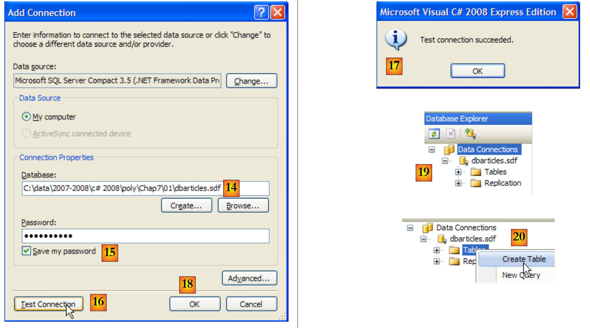 |
- [14]: il nome del database appena creato
- [15]: si seleziona l’opzione “Save my password” per non doverla digitare ogni volta
- [16]: si verifica la connessione
- [17]: tutto a posto
- [18]: si conferma la pagina delle informazioni
- [19]: la connessione appare nel gestore dei database
- [20]: per ora il database non contiene tabelle. Ne creiamo una. Un articolo avrà i seguenti campi:
- id: un identificativo univoco - chiave primaria
- nom: nome dell’articolo – univoco
- prix: prezzo dell’articolo
- stockactuel: la sua giacenza attuale
- stockminimum: la quantità minima di magazzino al di sotto della quale è necessario rifornire l’articolo
 |
- [21]: il campo [id] è di tipo intero ed è la chiave primaria [22] della tabella.
- [23]: questa chiave primaria è di tipo Identity. Questo concetto, specifico del server SGBD SQL, indica che la chiave primaria verrà generata dallo stesso SGBD. In questo caso, la chiave primaria sarà un numero intero che parte da 1 e viene incrementato di 1 per ogni nuova chiave.
 |
- [24]: vengono creati gli altri campi. Si noti che il campo [nom] ha un e vincolo di unicità [25].
- [26]: si assegna un nome alla tabella
- [27]: dopo aver convalidato la struttura della tabella, questa appare nel database.
 |
- [28]: si richiede di visualizzare il contenuto della tabella
- [29]: per il momento è vuota
- [30]: la si riempie con alcuni dati. Una riga viene convalidata non appena si passa all’inserimento della riga successiva. Il campo [id] non viene compilato: viene generato automaticamente al momento della convalida della riga.
Resta da configurare il progetto in modo che questo database, che attualmente si trova nella directory principale del progetto, venga copiato automaticamente nella cartella di esecuzione del progetto:
 |
- [1]: si richiede di visualizzare tutti i file
- [2]: compare il file [dbarticles.sdf]
- [3]: la si include nel progetto
 |
- [4]: l'operazione di aggiunta di una fonte di dati a un progetto avvia una procedura guidata di cui qui non abbiamo bisogno [5].
- [6]: il database fa ora parte del progetto. Si ritorna alla modalità normale [7].
- [8]: il progetto con il relativo database
- [9]: nelle proprietà del database, come si può vedere in [10], è indicato che questo verrà automaticamente copiato nella cartella di esecuzione del progetto. È da lì che il programma che scriveremo lo recupererà.
Ora che disponiamo di un database, potremo utilizzarlo. Prima però, facciamo qualche ripasso SQL.
9.3.2. I quattro comandi di base del linguaggio SQL
SQL (Structured Language Query) è un linguaggio, parzialmente standardizzato, per l’interrogazione e l’aggiornamento dei database. Tutti i SGBD rispettano la parte standardizzata di SQL, ma aggiungono al linguaggio estensioni proprietarie che sfruttano alcune peculiarità del SGBD. Ne abbiamo già visto due esempi: la generazione automatica delle chiavi primarie e i tipi consentiti per le colonne di una tabella dipendono spesso dal SGBD.
I quattro comandi di base del linguaggio SQL che presentiamo sono standardizzati e accettati da tutti i SGBD:
La query che consente di ottenere i dati contenuti in un database. Solo le parole chiave della prima riga sono obbligatorie, le altre sono facoltative. Esistono altre parole chiave non riportate qui.
| |
Inserisce una riga nella tabella. (col1, col2, ...) specifica le colonne della riga da inizializzare con i valori (val1, val2, ...). | |
Aggiorna le righe della tabella che soddisfano la condizione (tutte le righe se non è presente un where). Per queste righe, la colonna coli riceve il valore vali | |
Elimina tutte le righe della tabella che soddisfano la condizione |
Scriveremo un'applicazione da console che consenta di inviare comandi SQL al database [dbarticles] che abbiamo creato in precedenza. Ecco un esempio di esecuzione. Il lettore è invitato a comprendere i comandi SQL inviati e i relativi risultati.
- riga 1: la cosiddetta stringa di connessione: contiene tutti i parametri necessari per connettersi al database.
- riga 3: si richiede il contenuto della tabella [articles]
- riga 16: si inserisce una nuova riga. Si noti che il campo id non viene inizializzato in questa operazione poiché sarà il campo SGBD a generare il valore di questo campo.
- riga 19: verifica. Riga 28: la riga è stata effettivamente aggiunta.
- riga 30: si aumenta del 10% il prezzo dell’articolo appena aggiunto.
- riga 33: si verifica
- riga 42: l'aumento del prezzo è stato effettivamente applicato
- riga 44: si elimina l’articolo aggiunto in precedenza
- riga 47: si verifica
- righe 53-55: l'articolo non è più presente.
9.3.3. Le interfacce di base di ADO.NET per la modalità connessa
Torniamo allo schema di un'applicazione che utilizza un database tramite un connettore ADO.NET:
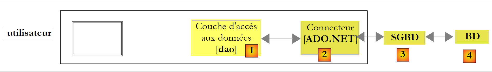 |
In modalità connessa, l’applicazione:
- apre una connessione con la fonte dati
- opera con la fonte dati in modalità lettura/scrittura
- chiude la connessione
Tre interfacce ADO.NET sono principalmente coinvolte in queste operazioni:
- IDbConnection, che incapsula le proprietà e i metodi della connessione.
- IDbCommand, che incapsula le proprietà e i metodi del comando SQL eseguito.
- IDataReader, che incapsula le proprietà e i metodi del risultato di un comando SQL Select.
L'interfaccia IDbConnection
Serve a gestire la connessione al database. I metodi M e le proprietà P di questa interfaccia che utilizzeremo sono i seguenti:
Nome | Tipo | Ruolo |
P | Stringa di connessione al database. Specifica tutti i parametri necessari per stabilire la connessione con un database specifico. | |
M | apre la connessione con il database definito da ConnectionString | |
M | chiude la connessione | |
M | avvia una transazione. | |
P | stato della connessione: ConnectionState.Closed, ConnectionState.Open, ConnectionState.Connecting, ConnectionState.Executing, ConnectionState.Fetching, ConnectionState.Broken |
Se Connection è una classe che implementa l'interfaccia IDbConnection, l'apertura della connessione può avvenire come segue:
L'interfaccia IDbCommand
Serve per eseguire un comando SQL o una procedura memorizzata. I metodi M e le proprietà P di questa interfaccia che utilizzeremo saranno i seguenti:
Nome | Tipo | Ruolo |
P | indica cosa deve essere eseguito - prende i propri valori da un elenco: - CommandType.Text: esegue il comando SQL definito nella proprietà CommandText. È il valore predefinito. - CommandType.StoredProcedure: esegue una procedura memorizzata nel database | |
P | - il testo del comando SQL da eseguire se CommandType = CommandType.Text - il nome della procedura memorizzata da eseguire se CommandType = CommandType.StoredProcedure | |
P | la connessione IDbConnection da utilizzare per eseguire l'ordine SQL | |
P | la transazione IDbTransaction in cui eseguire l'ordine SQL | |
P | l'elenco dei parametri di un ordine SQL configurato. L'ordine update articles set price=price*1.1 where id=@id ha il parametro @id. | |
M | per eseguire un comando SQL Select. Si ottiene un oggetto IDataReader che rappresenta il risultato di Select. | |
M | per eseguire un comando SQL Update, Insert, Delete. Si ottiene il numero di righe interessate dall'operazione (aggiornate, inserite, eliminate). | |
M | per eseguire un comando SQL Select che restituisce un unico risultato, come in: select count(*) from articles. | |
M | per creare i parametri IDbParameter di un ordine SQL configurato. | |
M | consente di ottimizzare l'esecuzione di una query parametrizzata quando viene eseguita più volte con parametri diversi. |
Se Command è una classe che implementa l'interfaccia IDbCommand, l'esecuzione di un comando SQL senza transazione avrà la seguente forma:
L'interfaccia IDataReader
Serve a incapsulare i risultati di un ordine SQL Select. Un oggetto IDataReader rappresenta una tabella con righe e colonne, che viene elaborata in modo sequenziale: prima la prima riga, poi la seconda, ... I metodi M e le proprietà P di questa interfaccia che utilizzeremo saranno i seguenti:
Nome | Tipo | Ruolo |
P | il numero di colonne della tabella IDataReader | |
M | GetName(i) restituisce il nome della colonna n. i della tabella IDataReader. | |
P | Item[i] rappresenta la colonna n. i della riga corrente della tabella IDataReader. | |
M | passa alla riga successiva della tabella IDataReader. Restituisce il valore booleano True se la lettura è andata a buon fine, False in caso contrario. | |
M | chiude la tabella IDataReader. | |
M | GetBoolean(i): restituisce il valore booleano della colonna n. i della riga corrente della tabella IDataReader. Gli altri metodi analoghi sono i seguenti: GetDateTime, GetDecimal, GetDouble, GetFloat, GetInt16, GetInt32, GetInt64, GetString. | |
M | Getvalue(i): restituisce il valore della colonna n. i della riga corrente della tabella IDataReader come tipo object. | |
M | IsDBNull(i) restituisce True se la colonna n. i della riga corrente della tabella IDataReader non ha alcun valore, il che è indicato dal valore SQL NULL. |
L'elaborazione di un oggetto IDataReader spesso si presenta come segue:
9.3.4. Gestione degli errori
Torniamo all'architettura di un'applicazione con database:
 |
Il livello [dao] può incontrare numerosi errori durante l’utilizzo del database. Questi verranno segnalati come eccezioni generate dal connettore ADO.NET. Il codice del livello [dao] deve gestirle. Qualsiasi operazione con il database deve essere eseguita all’interno di un blocco try / catch / finally per intercettare e gestire un’eventuale eccezione e liberare le risorse che devono essere liberate. Pertanto, il codice visto in precedenza per elaborare il risultato di un comando Select diventa il seguente:
In ogni caso, gli oggetti IDataReader e IDbConnection devono essere chiusi. Ecco perché tale chiusura viene effettuata nelle clausole finally.
La chiusura della connessione e quella dell’oggetto IDataReader possono essere automatizzate con una clausola using:
- Riga 3: la clausola using garantisce che la connessione aperta nel blocco using(...){...} venga chiusa al di fuori di esso, indipendentemente dal modo in cui si esce dal blocco: normalmente o a seguito di un'eccezione. Si risparmia un finally, ma il vantaggio non sta in questo risparmio marginale. L’uso di un using evita allo sviluppatore di dover chiudere personalmente la connessione. D'altronde, dimenticare di chiudere una connessione può passare inosservato e «bloccare» l’applicazione in modo apparentemente casuale, ogni volta che il SGBD raggiunge il numero massimo di connessioni aperte che può supportare.
- Riga 11: si procede in modo analogo per chiudere l’oggetto IDataReader.
9.3.5. Configurazione del progetto di esempio
Il progetto finale sarà il seguente:
 |
- [1]: il progetto avrà un file di configurazione [App.config]
- [2]: utilizza due classi di DLL non referenziate per impostazione predefinita, che devono quindi essere aggiunte ai riferimenti del progetto:
- [System.Configuration] per utilizzare il file di configurazione [App.config]
- [System.Data.SqlServerCe] per utilizzare il database SQL Server Compact
- [3, 4]: spiega come aggiungere riferimenti a un progetto.
- [5, 6]: spiega come aggiungere il file [App.config] a un progetto.
Il file di configurazione [App.config] sarà il seguente:
<?xml version="1.0" encoding="utf-8" ?>
<configuration>
<connectionStrings>
<add name="dbSqlServerCe" connectionString="Data Source=|DataDirectory|\dbarticles.sdf;Password=dbarticles;" />
</connectionStrings>
</configuration>
- righe 3-5: il tag <connectionStrings> al plurale definisce le stringhe di connessione ai database. Una stringa di connessione ha la forma "parametro1=valore1;parametro2=valore2;...". Essa definisce tutti i parametri necessari per stabilire una connessione con un database specifico. Queste stringhe di connessione variano a seconda di ciascun SGBD. Il sito [http://www.connectionstrings.com/] fornisce il formato di tali stringhe per i principali SGBD.
- riga 4: definisce una stringa di connessione specifica, in questo caso quella del database SQL Server Compact dbarticles.sdf che abbiamo creato in precedenza:
- name = nome della stringa di connessione. È tramite questo nome che una stringa di connessione viene recuperata dal programma C#
- connectionString: la stringa di connessione per un database SQL Server Compact
- DataSource: indica il percorso del database. La sintassi |DataDirectory| indica la cartella di esecuzione del progetto.
- Password: la password del database. Questo parametro è assente se non è presente alcuna password.
Il codice C# per recuperare la stringa di connessione precedente è il seguente:
string connectionString = ConfigurationManager.ConnectionStrings["dbSqlServerCe"].ConnectionString;
- ConfigurationManager è la classe di DLL [System.Configuration] che consente di utilizzare il file [App.config].
- ConnectionsStrings["nom"].ConnectionString: indica l'attributo connectionString del tag < add name="nome" connectionString="..."> della sezione <connectionStrings> di [App.config]
Il progetto è ora configurato. Esaminiamo ora la classe [Program.cs], di cui abbiamo visto in precedenza un esempio di esecuzione.
9.3.6. Il programma di esempio
Il programma [program.cs] è il seguente:
using System;
using System.Collections.Generic;
using System.Data.SqlServerCe;
using System.Text;
using System.Text.RegularExpressions;
using System.Configuration;
namespace Chap7 {
class SqlCommands {
static void Main(string[] args) {
// console dell'applicazione - esegue le richieste SQL digitate dalla tastiera
// su un database la cui stringa di connessione è ricavata da un file di configurazione
// elaborazione del file di configurazione [App.config]
string connectionString = null;
try {
connectionString = ConfigurationManager.ConnectionStrings["dbSqlServerCe"].ConnectionString;
} catch (Exception e) {
Console.WriteLine("Erreur de configuration : {0}", e.Message);
return;
}
// visualizzazione della stringa di connessione
Console.WriteLine("Chaîne de connexion à la base : [{0}]\n", connectionString);
// si crea un dizionario dei comandi SQL accettati
string[] commandesSQL = new string[] { "select", "insert", "update", "delete" };
Dictionary<string, bool> dicoCommandes = new Dictionary<string, bool>();
for (int i = 0; i < commandesSQL.Length; i++) {
dicoCommandes.Add(commandesSQL[i], true);
}
// lettura ed esecuzione dei comandi SQL digitati dalla tastiera
string requête = null; // testo della query SQL
string[] champs; // i campi della query
Regex modèle = new Regex(@"\s+"); // sequenza di spazi
// ciclo di immissione ed esecuzione dei comandi SQL digitati dalla tastiera
while (true) {
// richiesta della query
Console.Write("\nRequête SQL (rien pour arrêter) : ");
requête = Console.ReadLine().Trim().ToLower();
// finito?
if (requête == "")
break;
// si scompone la richiesta in campi
champs = modèle.Split(requête);
// Richiesta valida?
if (champs.Length == 0 || ! dicoCommandes.ContainsKey(champs[0])) {
// messaggio di errore
Console.WriteLine("Requête invalide. Utilisez select, insert, update, delete ou rien pour arrêter");
// richiesta successiva
continue;
}
// esecuzione della richiesta
if (champs[0] == "select") {
ExecuteSelect(connectionString, requête);
} else
ExecuteUpdate(connectionString, requête);
}
}
// Esecuzione di una richiesta di aggiornamento
static void ExecuteUpdate(string connectionString, string requête) {
...
}
// esecuzione di una query Select
static void ExecuteSelect(string connectionString, string requête) {
....
}
}
}
- righe 1-6: gli spazi dei nomi utilizzati nell’applicazione. La gestione di un database SQL Server Compact richiede lo spazio dei nomi [System.Data.SqlServerCe] della riga 3. In questo caso si ha una dipendenza da uno spazio dei nomi proprietario di un SGBD. Ne consegue che il programma dovrà essere modificato se si cambia il SGBD.
- riga 18: la stringa di connessione al database viene letta dal file [App.config] e visualizzata alla riga 25. Servirà per stabilire una connessione con il database.
- righe 28-32: un dizionario che memorizza i nomi dei quattro comandi SQL autorizzati: select, insert, update, delete.
- righe 40-62: il ciclo di immissione dei comandi SQL digitati dalla tastiera e la loro esecuzione sul database
- riga 48: la riga digitata sulla tastiera viene scomposta in campi per individuarne il primo termine, che deve essere: select, insert, update, delete
- righe 50-55: se la query non è valida, viene visualizzato un messaggio di errore e si passa alla query successiva.
- righe 57-61: viene eseguito il comando SQL immesso. L'esecuzione assume una forma diversa a seconda che si tratti di un comando select o di un comando insert, update, delete. Nel primo caso, il comando recupera i dati dal database senza modificarlo; nel secondo, lo aggiorna senza recuperare dati. In entrambi i casi, l’esecuzione viene delegata a un metodo che richiede due parametri:
- la stringa di connessione che gli consentirà di connettersi al database
- il comando SQL da eseguire su tale connessione
9.3.7. Esecuzione di una query SELECT
L’esecuzione degli ordini SQL richiede le seguenti fasi:
- Connessione al database
- Invio dei comandi SQL al database
- Elaborazione dei risultati del comando SQL
- Chiusura della connessione
I passaggi 2 e 3 vengono eseguiti ripetutamente, mentre la chiusura della connessione avviene solo al termine dell'elaborazione del database. Le connessioni aperte sono risorse limitate di un SGBD. È necessario utilizzarle con parsimonia. Pertanto, si cercherà sempre di limitare la durata di una connessione aperta. Nell’esempio in esame, la connessione viene chiusa dopo ogni comando SQL. Viene aperta una nuova connessione per il comando SQL successivo. L’apertura e la chiusura di una connessione comportano un costo. Per ridurre questo costo, alcuni SGBD offrono il concetto di pool di connessioni aperte: all’avvio dell’applicazione, vengono aperte N connessioni che vengono assegnate al pool. Queste rimarranno aperte fino al termine dell’applicazione. Quando l’applicazione apre una connessione, riceve una delle N connessioni già aperte presenti nel pool. Quando chiude la connessione, questa viene semplicemente reinserita nel pool. Il vantaggio di questo sistema è che risulta trasparente per lo sviluppatore: non è necessario modificare il programma per utilizzare il pool di connessioni. La configurazione del pool di connessioni dipende dal SGBD.
Ci concentriamo innanzitutto sull’esecuzione dei comandi SQL e Select. Il metodo ExecuteSelect del nostro programma di esempio è il seguente:
// esecuzione di una query Select
static void ExecuteSelect(string connectionString, string requête) {
// gestione delle eventuali eccezioni
try {
using (SqlCeConnection connexion = new SqlCeConnection(connectionString)) {
// apertura della connessione
connexion.Open();
// esegue sqlCommand con query SELECT
SqlCeCommand sqlCommand = new SqlCeCommand(requête, connexion);
SqlCeDataReader reader= sqlCommand.ExecuteReader();
// visualizzazione dei risultati
AfficheReader(reader);
}
} catch (Exception ex) {
// messaggio di errore
Console.WriteLine("Erreur d'accès à la base de données (" + ex.Message + ")");
}
}
// visualizzazione del reader
static void AfficheReader(IDataReader reader) {
...
}
- riga 2: il metodo riceve due parametri:
- la stringa di connessione [connectionString], che gli consentirà di connettersi al database
- il comando SQL Select [requête] da eseguire su questa connessione
- riga 4: qualsiasi operazione con un database può generare un'eccezione che si potrebbe voler gestire. Ciò è tanto più importante in questo caso, in quanto i comandi SQL forniti dall'utente potrebbero essere sintatticamente errati. È necessario poterlo segnalare all'utente. L'intero codice è quindi racchiuso in un blocco try/catch.
- riga 5: qui ci sono diversi aspetti:
- la connessione al database viene inizializzata con la stringa di connessione [connectionString]. Non è ancora aperta; lo sarà alla riga 7.
- la clausola using (Risorsa) {...} è una semplificazione sintattica che garantisce il rilascio della risorsa Ressource, in questo caso una connessione, all’uscita dal blocco controllato da using.
- La connessione è di tipo proprietario: SqlCeConnection, specifica del SGBD SQL Server Compact.
- riga 7: la connessione è aperta. È in questo momento che vengono utilizzati i parametri della stringa di connessione.
- riga 9: viene emesso un comando SQL tramite un oggetto proprietario SqlCeCommand. La riga 9 inizializza questo oggetto con due informazioni: la connessione da utilizzare e il comando SQL da emettere su di essa. L’oggetto SqlCeCommand serve sia per eseguire un comando Select sia un comando Update, Insert, Delete. Le sue proprietà e i suoi metodi sono stati illustrati nel paragrafo 9.3.3.
- riga 10: un ordine SQL Select viene eseguito tramite il metodo ExecuteReader dell’oggetto SqlCeCommand, che restituisce un oggetto IDataReader, i cui metodi e proprietà sono stati illustrati nel paragrafo 9.3.3.
- riga 12: la visualizzazione dei risultati è affidata al seguente metodo AfficheReader:
// visualizzazione del reader
static void AfficheReader(IDataReader reader) {
using (reader) {
// elaborazione dei risultati
// -- colonne
StringBuilder ligne = new StringBuilder();
int i;
for (i = 0; i < reader.FieldCount - 1; i++) {
ligne.Append(reader.GetName(i)).Append(",");
}
ligne.Append(reader.GetName(i));
Console.WriteLine("\n{0}\n{1}\n{2}\n", "".PadLeft(ligne.Length, '-'), ligne, "".PadLeft(ligne.Length, '-'));
// -- dati
while (reader.Read()) {
// elaborazione riga corrente
ligne = new StringBuilder();
for (i = 0; i < reader.FieldCount; i++) {
ligne.Append(reader[i].ToString()).Append(" ");
}
Console.WriteLine(ligne);
}
}
}
- riga 2: il metodo riceve un oggetto IDataReader. Si noti che in questo caso è stata utilizzata un'interfaccia e non una classe specifica.
- riga 3: la clausola using viene utilizzata per gestire automaticamente la chiusura dell'oggetto IDataReader.
- righe 8-10: vengono visualizzati i nomi delle colonne della tabella dei risultati della query Select. Si tratta delle colonne coli della query `select col1, col2, ... from table ...`
- righe 14-21: si scorre la tabella dei risultati e si visualizzano i valori di ogni riga della tabella.
- riga 18: non si conosce il tipo della colonna n. i del risultato perché non si conosce la tabella interrogata. Non è quindi possibile utilizzare la sintassi reader.GetXXX(i), dove XXX è il tipo della colonna n. i, poiché non si conosce tale tipo. Si utilizza quindi la sintassi reader.Item[i].ToString() per ottenere la rappresentazione della colonna n. i sotto forma di stringa di caratteri. La sintassi reader.Item[i].ToString() può essere abbreviata in reader[i].ToString().
9.3.8. Esecuzione di un comando di aggiornamento: INSERT, UPDATE, DELETE
Il codice del metodo ExecuteUpdate è il seguente:
// esecuzione di una richiesta di aggiornamento
static void ExecuteUpdate(string connectionString, string requête) {
// gestione delle eventuali eccezioni
try {
using (SqlCeConnection connexion = new SqlCeConnection(connectionString)) {
// apertura della connessione
connexion.Open();
// esegue sqlCommand con richiesta di aggiornamento
SqlCeCommand sqlCommand = new SqlCeCommand(requête, connexion);
int nbLignes = sqlCommand.ExecuteNonQuery();
// visualizzazione del risultato
Console.WriteLine("Il y a eu {0} ligne(s) modifiée(s)", nbLignes);
}
} catch (Exception ex) {
// messaggio di errore
Console.WriteLine("Erreur d'accès à la base de données (" + ex.Message + ")");
}
}
Abbiamo detto che l'esecuzione di un comando di interrogazione Select non differisce da quella di un comando di aggiornamento Update, Insert, Delete solo per il metodo dell’oggetto SqlCeCommand utilizzato: ExecuteReader per Select, ExecuteNonQuery per Update, Insert, Delete. Nel codice sopra riportato commentiamo solo quest'ultimo metodo:
- riga 10: l'ordine Update, Insert, Delete viene eseguito dal metodo ExecuteNonQuery dell'oggetto SqlCeCommand. Se l'operazione va a buon fine, questo metodo restituisce il numero di righe aggiornate (update), inserite (insert) o eliminate (delete).
- riga 12: questo numero di righe viene visualizzato sullo schermo
Si invita il lettore a consultare un esempio di esecuzione di questo codice al paragrafo 9.3.2.
9.4. Altri connettori ADO.NET
Il codice che abbiamo studiato è proprietario: dipende dallo spazio dei nomi [System.Data.SqlServerCe] destinato al SGBD SQL Server Compact. Ora realizzeremo lo stesso programma con diversi connettori .NET e vedremo cosa cambia.
9.4.1. Connettore SQL Server 2005
L’architettura utilizzata sarà la seguente:
 |
L’installazione di SQL Server 2005 è descritta negli allegati al paragrafo 1.1.
Creiamo un secondo progetto nella stessa soluzione di prima, quindi creiamo il database SQL Server 2005. Il SGBD SQL Server 2005 deve essere avviato prima delle operazioni che seguono:
 |
- [1]: creare un nuovo progetto nella soluzione corrente e impostarlo come progetto attivo.
- [2]: creare una nuova connessione
- [3]: selezionare il tipo di connessione
 |
- [4]: selezionare il server SGBD SQL
- [5]: risultato della scelta precedente
- [6]: utilizzare il pulsante [Browse] per specificare dove creare il database SQL Server 2005. Il database è contenuto in un file .mdf.
- [7]: scegliere la directory principale del nuovo progetto e denominare il database [dbarticles.mdf].
- [8]: utilizzare l'autenticazione Windows.
- [9]: confermare la pagina delle informazioni
 |
- [11]: il database SQL Server
- [12]: creare una tabella. Questa sarà identica al database SQL Server Compact creato in precedenza.
- [13]: il campo [id]
- [14]: il campo [id] è di tipo Identity.
- [15,16]: il campo [id] è una chiave primaria
 |
- [17]: gli altri campi della tabella
- [18]: assegnare il nome [articles] alla tabella al momento del salvataggio (Ctrl+S).
Non resta che inserire i dati nella tabella:
 |  |
Includiamo il database nel progetto:
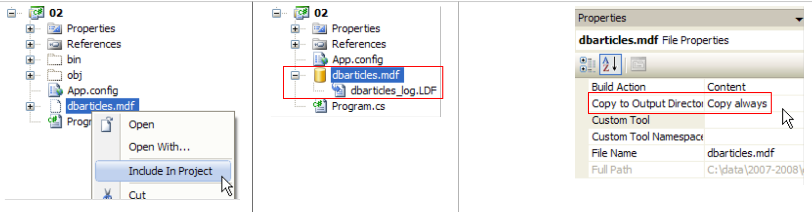 |
I riferimenti del progetto sono i seguenti:
 |
Il file di configurazione [App.config] è il seguente:
<?xml version="1.0" encoding="utf-8" ?>
<configuration>
<connectionStrings>
<add name="connectString1" connectionString="Data Source=.\SQLEXPRESS;AttachDbFilename=|DataDirectory|\dbarticles.mdf;Integrated Security=True;Connect Timeout=30;User Instance=True;" />
<add name="connectString2" connectionString="Data Source=.\SQLEXPRESS;AttachDbFilename=|DataDirectory|\dbarticles.mdf;Uid=sa;Pwd=msde;Connect Timeout=30;" />
</connectionStrings>
</configuration>
- riga 4: la stringa di connessione al database [dbarticles.mdf] con autenticazione Windows
- riga 5: la stringa di connessione al database [dbarticles.mdf] con autenticazione SQL Server. [sa,msde] è la coppia (login, password) dell’amministratore del server SQL Server, come definito al paragrafo 1.1.
Il programma [Program.cs] si evolve come segue:
using System.Data.SqlClient;
...
namespace Chap7 {
class SqlCommands {
static void Main(string[] args) {
...
// elaborazione del file di configurazione [App.config]
string connectionString = null;
try {
connectionString = ConfigurationManager.ConnectionStrings["connectString2"].ConnectionString;
} catch (Exception e) {
...
}
...
// lettura ed esecuzione dei comandi SQL digitati dalla tastiera
...
}
// Esecuzione di una richiesta di aggiornamento
static void ExecuteUpdate(string connectionString, string requête) {
// gestione delle eventuali eccezioni
try {
using (SqlConnection connexion = new SqlConnection(connectionString)) {
// apertura della connessione
connexion.Open();
// esegue sqlCommand con richiesta di aggiornamento
SqlCommand sqlCommand = new SqlCommand(requête, connexion);
int nbLignes = sqlCommand.ExecuteNonQuery();
// visualizzazione del risultato
Console.WriteLine("Il y a eu {0} ligne(s) modifiée(s)", nbLignes);
}
} catch (Exception ex) {
....
}
}
// esecuzione di una query Select
static void ExecuteSelect(string connectionString, string requête) {
// gestione delle eventuali eccezioni
try {
using (SqlConnection connexion = new SqlConnection(connectionString)) {
// apertura della connessione
connexion.Open();
// esegue sqlCommand con query SELECT
SqlCommand sqlCommand = new SqlCommand(requête, connexion);
SqlDataReader reader = sqlCommand.ExecuteReader();
// elaborazione dei risultati
...
}
} catch (Exception ex) {
...
}
}
}
}
- riga 1: lo spazio dei nomi [System.Data.SqlClient] contiene le classi che consentono di gestire un database SQL Server 2005
- riga 24: la connessione è di tipo SQLConnection
- riga 28: l'oggetto che incapsula i comandi SQL è di tipo SQLCommand
- riga 47: l'oggetto che incapsula il risultato di un comando SQL Select è di tipo SQLDataReader
Il codice è identico a quello utilizzato con SGBD SQL Server Compact, a parte i nomi delle classi. Per eseguirlo, è possibile utilizzare (riga 11) una delle due stringhe di connessione definite in [App.config].
9.4.2. Connettore MySQL5
L’architettura utilizzata sarà la seguente:
 |
L’installazione di MySQL5 è descritta negli allegati al paragrafo 1.2 e quella del connettore Ado.Net al paragrafo 1.2.5.
Creiamo un terzo progetto nella stessa soluzione di prima e aggiungiamo i riferimenti necessari:
 |
- [1]: il nuovo progetto
- [2]: a cui aggiungiamo i riferimenti
- [3]: DLL, [MySQL.Data] del connettore Ado.Net di MySql5, nonché quella di [System.Configuration], [4].
Ora creiamo il database [dbarticles] e la relativa tabella [articles]. È necessario avviare il processo SGBD e MySQL5. Inoltre, si avvia il client [Query Browser] (cfr. paragrafo 1.2.3).
 |
- [1]: in [Query Browser], fare clic con il tasto destro del mouse nell’area [Schemata] [2] per creare [3], un nuovo schema, termine che indica un database.
- [4]: il database si chiamerà [dbarticles]. In [5] è visibile. Al momento non contiene tabelle. Eseguiremo il seguente script SQL:
- riga 1: il database [dbarticles] diventa il database corrente. I comandi SQL che seguono verranno eseguiti su di esso.
- righe 4-10: definizione della tabella [ARTICLES]. Si noti che SQL è il proprietario di MySQL. I tipi delle colonne e la generazione automatica della chiave primaria (attributo AUTO_INCREMENT) differiscono da quanto osservato con le tabelle SGBD e SQL in Server Compact ed Express.
- righe 12-14: inserimento di tre righe
- righe 16-21: aggiunta di vincoli di integrità sulle colonne.
Questo script viene eseguito in [MySQL Query Browser]:
 |
- in [MySQL Query Browser] [6], viene caricato lo script [7]. Lo si vede in [8]. In [9], viene eseguito.
 |
- in [10], è stata creata la tabella [articles]. Si fa doppio clic su di essa. Viene visualizzata la finestra [11] con al suo interno la query [12], pronta per essere eseguita da [13]. In [14], il risultato dell'esecuzione. Sono presenti le tre righe previste. Si noti che i valori del campo [ID] sono stati generati automaticamente (attributo AUTO_INCREMENT del campo).
Ora che il database è pronto, possiamo tornare allo sviluppo dell’applicazione in Visual Studio.
 |
In [1], il programma [Program.cs] e il file di configurazione [App.config]. Quest’ultimo è il seguente:
<?xml version="1.0" encoding="utf-8" ?>
<configuration>
<connectionStrings>
<add name="dbArticlesMySql5" connectionString="Server=localhost;Database=dbarticles;Uid=root;Pwd=root;" />
</connectionStrings>
</configuration>
Riga 4: gli elementi della stringa di connessione sono i seguenti:
- Server: nome del computer su cui si trova il SGBD, MySQL, in questo caso localhost, c.a.d. Il computer su cui verrà eseguito il programma.
- Database: il nome del database gestito, in questo caso dbarticles
- Uid: il nome utente, in questo caso root
- Pwd: la sua password, in questo caso root. Queste due informazioni si riferiscono all’amministratore creato al paragrafo 1.2.
Il programma [Program.cs] è identico a quello delle versioni precedenti, salvo i seguenti dettagli:
MySql.Data.MySqlClient | |
MySqlConnection | |
MySqlCommand | |
MySqlDataReader |
Il programma utilizza la stringa di connessione denominata dbArticlesMySql5 nel file [App.config]. L'esecuzione produce i seguenti risultati:
9.4.3. Connettore ODBC
L'architettura utilizzata sarà la seguente:
 |
Il vantaggio dei connettori ODBC è che offrono un'interfaccia standard alle applicazioni che li utilizzano. In questo modo la nuova applicazione potrà, con un unico codice, dialogare con qualsiasi SGBD dotato di un connettore ODBC, c.a.d e con la maggior parte dei SGBD. Le prestazioni dei connettori ODBC sono inferiori a quelle dei connettori “proprietari”, che sono in grado di sfruttare tutte le caratteristiche di un particolare SGBD. In compenso, si ottiene una grande flessibilità dell’applicazione: è possibile cambiare il SGBD senza modificare il codice.
Esaminiamo un esempio in cui l’applicazione utilizza un database MySQL5 o un database SQL Server Express a seconda della stringa di connessione fornita. Di seguito, ipotizziamo che:
- i server Express SGBD, SQL e MySQL5 siano stati avviati
- che il driver ODBC di MySQL5 sia presente sul computer (cfr. paragrafo 1.2.6). Quello di SQL Server 2005 è presente per impostazione predefinita.
- I database utilizzati sono quelli indicati nel paragrafo 9.4.2 per il database MySQL5 e quelli indicati nel paragrafo 9.4.1 per il database SQL Server Express.
Il nuovo progetto Visual Studio è il seguente:
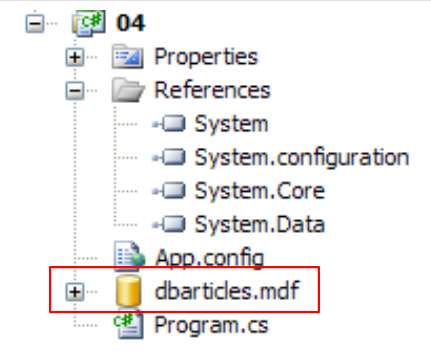 |
Come illustrato sopra, il database SQL Server [dbarticles.mdf] creato al paragrafo 9.4.1 è stato copiato nella cartella del progetto.
Il file di configurazione [App.config] è il seguente:
<?xml version="1.0" encoding="utf-8" ?>
<configuration>
<connectionStrings>
<add name="dbArticlesOdbcMySql5" connectionString="Driver={MySQL ODBC 3.51 Driver};Server=localhost;Database=dbarticles; User=root;Password=root;" />
<add name="dbArticlesOdbcSqlServer2005" connectionString="Driver={SQL Native Client};Server=.\SQLExpress;AttachDbFilename=|DataDirectory|\dbarticles.mdf;Uid=sa;Pwd=msde;" />
</connectionStrings>
</configuration>
- riga 4: la stringa di connessione della sorgente ODBC MySQL5. Si tratta di una stringa già esaminata, nella quale è presente un nuovo parametro Driver che definisce il driver ODBC da utilizzare.
- riga 5: la stringa di connessione della sorgente ODBC SQL Server Express. Si tratta della stringa già utilizzata in un esempio precedente, alla quale è stato aggiunto il parametro Driver.
Il programma [Program.cs] è identico a quello delle versioni precedenti, salvo i seguenti dettagli:
System.Data.Odbc | |
OdbcConnection | |
OdbcCommand | |
OdbcDataReader |
Il programma utilizza una delle due stringhe di connessione definite nel file [App.config]. L'esecuzione produce i seguenti risultati:
Con la stringa di connessione [dbArticlesOdbcSqlServer2005]:
Con la stringa di connessione [dbArticlesOdbcMySql5]:
9.4.4. Connettore OLE DB
L'architettura utilizzata sarà la seguente:
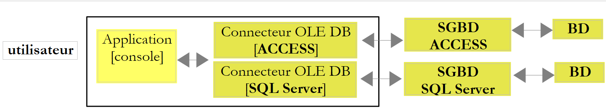 |
Come i connettori ODBC, anche i connettori OLE e DB (Object Linking and Embedding DataBase) presentano un'interfaccia standard per le applicazioni che li utilizzano. I driver ODBC consentono l’accesso ai database. Le fonti di dati per i driver OLE e DB sono più varie: database, sistemi di messaggistica, rubriche, ... Qualsiasi fonte di dati può essere oggetto di un driver OLE DB, se lo decide un editore. Si ottiene così un accesso standard a un’ampia varietà di dati.
Esaminiamo un esempio in cui l’applicazione utilizza un database ACCESS o un database SQL Server Express a seconda della stringa di connessione fornita. Di seguito, supponiamo che il server Express SGBD SQL sia stato avviato e che il database utilizzato sia quello dell'esempio precedente.
Il nuovo progetto di Visual Studio è il seguente:
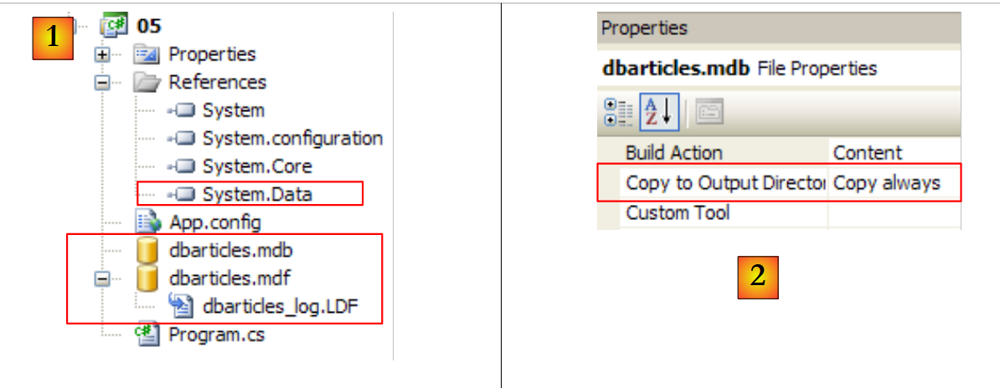 |
- in [1]: lo spazio dei nomi necessario per i connettori OLE e DB è [System.Data.OleDb], presente nel riferimento [System.Data] sopra indicato. Il database SQL Server [dbarticles.mdf] è stato copiato dal progetto precedente. Il database [dbarticles.mdb] è stato creato con Access.
- In [2]: come il database SQL Server, il database ACCESS possiede la proprietà [Copy to Output Directory=Copy Always] affinché venga automaticamente copiato nella cartella di esecuzione del progetto.
Il database ACCESS [dbarticles.mdb] è il seguente:
 |
In [1] è presente la struttura della tabella [articles], mentre in [2] è presente il suo contenuto.
Il file di configurazione [App.config] è il seguente:
<?xml version="1.0" encoding="utf-8" ?>
<configuration>
<connectionStrings>
<add name="dbArticlesOleDbAccess" connectionString="Provider=Microsoft.Jet.OLEDB.4.0;Data Source=|DataDirectory|\dbarticles.mdb;"/>
<add name="dbArticlesOleDbSqlServer2005" connectionString="Provider=SQLNCLI;Server=.\SQLEXPRESS;AttachDbFilename=|DataDirectory|\dbarticles.mdf;Uid=sa;Pwd=msde;" />
</connectionStrings>
</configuration>
- riga 4: la stringa di connessione della fonte OLE DB ACCESS. Qui si trova il parametro Provider che definisce il driver OLE DB da utilizzare, nonché il percorso del database
- riga 5: la stringa di connessione della sorgente OLE DB Server Express.
Il programma [Program.cs] è identico a quello delle versioni precedenti, salvo i seguenti dettagli:
System.Data.OleDb | |
OleDbConnection | |
OleDbCommand | |
OleDbDataReader |
Il programma utilizza una delle due stringhe di connessione definite nel file [App.config]. L'esecuzione produce i seguenti risultati con la stringa di connessione [dbArticlesOleDbAccess]:
9.4.5. Connettore generico
L'architettura utilizzata sarà la seguente:
 |
Come i connettori ODBC, OLE e DB, il connettore generico offre un'interfaccia standard alle applicazioni che lo utilizzano, migliorando al contempo le prestazioni senza compromettere la flessibilità. Infatti, il connettore generico si basa sui connettori proprietari SGBD. L’applicazione utilizza le classi del connettore generico. Queste classi fungono da intermediari tra l’applicazione e il connettore proprietario.
In questo caso, quando l’applicazione richiede, ad esempio, una connessione al connettore generico, quest’ultimo le restituisce un’istanza IDbConnection, l'interfaccia di connessione descritta al paragrafo 9.3.3, implementata da una classe MySQLConnection o SQLConnection a seconda della natura della richiesta che le è stata fatta. Si dice che il connettore generico abbia classi di tipo factory: si utilizza una classe factory per chiedergli di creare oggetti e fornirne i riferimenti (puntatori). Da qui il suo nome (factory = fabbrica, fabbrica di produzione di oggetti).
Non esiste un connettore generico per tutti i SGBD (aprile 2008). Per conoscere quelli installati su una macchina, è possibile utilizzare il seguente programma:
using System;
using System.Data;
using System.Data.Common;
namespace Chap7 {
class Providers {
public static void Main() {
DataTable dt = DbProviderFactories.GetFactoryClasses();
foreach (DataColumn col in dt.Columns) {
Console.Write("{0}|", col.ColumnName);
}
Console.WriteLine("\n".PadRight(40, '-'));
foreach (DataRow row in dt.Rows) {
foreach (object item in row.ItemArray) {
Console.Write("{0}|", item);
}
Console.WriteLine("\n".PadRight(40, '-'));
}
}
}
}
- riga 8: il metodo statico [DbProviderFactories.GetFactoryClasses()] restituisce l’elenco dei connettori generici installati, sotto forma di una tabella di database memorizzata in memoria (DataTable).
- righe 9-11: visualizzano i nomi delle colonne della tabella dt:
- dt.Columns è l’elenco delle colonne della tabella. Una colonna C è di tipo DataColumn
- [DataColumn]. ColumnName è il nome della colonna
- righe 13-18: visualizzano le righe della tabella dt:
- dt.Rows è l'elenco delle righe della tabella. Una riga L è di tipo DataRow
- [DataRow].ItemArray è un array di oggetti in cui ogni oggetto rappresenta una colonna della riga
Il risultato dell'esecuzione sul mio computer è il seguente:
- riga 1: la tabella ha quattro colonne. Le prime tre sono quelle che ci interessano di più in questo contesto.
La visualizzazione seguente mostra che sono disponibili i seguenti connettori generici:
Nome | ID |
System.Data.Odbc | |
System.Data.OleDb | |
System.Data.OracleClient | |
System.Data.SqlClient | |
System.Data.SqlServerCe.3.5 | |
MySql.Data.MySqlClient |
Un connettore generico è accessibile in un programma C# tramite il suo identificatore.
Esaminiamo un esempio in cui l'applicazione utilizza i vari database che abbiamo creato finora. L'applicazione riceverà due parametri:
- il primo parametro specifica il tipo di SGBD utilizzato, in modo che venga impiegata la libreria di classi corretta
- il secondo parametro specifica il database gestito, tramite una stringa di connessione.
Il nuovo progetto Visual Studio è il seguente:
 |
- in [1]: lo spazio dei nomi necessario per i connettori generici è [System.Data.common], presente nel riferimento [System.Data].
Il file di configurazione [App.config] è il seguente:
<?xml version="1.0" encoding="utf-8" ?>
<configuration>
<connectionStrings>
<add name="dbArticlesSqlServerCe" connectionString="Data Source=|DataDirectory|\dbarticles.sdf;Password=dbarticles;" />
<add name="dbArticlesSqlServer" connectionString="Data Source=.\SQLEXPRESS;AttachDbFilename=|DataDirectory|\dbarticles.mdf;Uid=sa;Pwd=msde;" />
<add name="dbArticlesMySql5" connectionString="Server=localhost;Database=dbarticles;Uid=root;Pwd=root;" />
<add name="dbArticlesOdbcMySql5" connectionString="Driver={MySQL ODBC 3.51 Driver};Server=localhost;Database=dbarticles; User=root;Password=root;Option=3;" />
<add name="dbArticlesOleDbSqlServer2005" connectionString="Provider=SQLNCLI;Server=.\SQLExpress;AttachDbFilename=|DataDirectory|\dbarticles.mdf;Uid=sa;Pwd=msde;" />
<add name="dbArticlesOdbcSqlServer2005" connectionString="Driver={SQL Native Client};Server=.\SQLExpress;AttachDbFilename=|DataDirectory|\dbarticles.mdf;Uid=sa;Pwd=msde;" />
<add name="dbArticlesOleDbAccess" connectionString="Provider=Microsoft.Jet.OLEDB.4.0;Data Source=|DataDirectory|\dbarticles.mdb;Persist Security Info=True"/>
</connectionStrings>
<appSettings>
<add key="factorySqlServerCe" value="System.Data.SqlServerCe.3.5"/>
<add key="factoryMySql" value="MySql.Data.MySqlClient"/>
<add key="factorySqlServer" value="System.Data.SqlClient"/>
<add key="factoryOdbc" value="System.Data.Odbc"/>
<add key="factoryOleDb" value="System.Data.OleDb"/>
</appSettings>
</configuration>
- righe 3-11: le stringhe di connessione dei vari database utilizzati.
- righe 13-17: i nomi dei connettori generici da utilizzare
Il programma [Program.cs] è il seguente:
...
using System.Data.Common;
namespace Chap7 {
class SqlCommands {
static void Main(string[] args) {
// applicazione console - esegue le query SQL digitate dalla tastiera
// su un database la cui stringa di connessione è ricavata da un file di configurazione, così come il nome del connettore associato SGBD
// verifica dei parametri
if (args.Length != 2) {
Console.WriteLine("Syntaxe : pg factory connectionString");
return;
}
// elaborazione del file di configurazione
string factory = null;
string connectionString = null;
DbProviderFactory connecteur = null;
try {
// factory
factory = ConfigurationManager.AppSettings[args[0]];
// stringa di connessione
connectionString = ConfigurationManager.ConnectionStrings[args[1]].ConnectionString;
// si ottiene un connettore generico per il SGBD
connecteur = DbProviderFactories.GetFactory(factory);
} catch (Exception e) {
Console.WriteLine("Erreur de configuration : {0}", e.Message);
return;
}
// visualizzazioni
Console.WriteLine("Provider factory : [{0}]\n", factory);
Console.WriteLine("Chaîne de connexion à la base : [{0}]\n", connectionString);
...
// esecuzione della richiesta
if (champs[0] == "select") {
ExecuteSelect(connecteur,connectionString, requête);
} else
ExecuteUpdate(connecteur, connectionString, requête);
}
}
// esecuzione di una richiesta di aggiornamento
static void ExecuteUpdate(DbProviderFactory connecteur, string connectionString, string requête) {
// gestione delle eventuali eccezioni
try {
using (DbConnection connexion = connecteur.CreateConnection()) {
// configurazione della connessione
connexion.ConnectionString = connectionString;
// apertura della connessione
connexion.Open();
// Configurazione del comando
DbCommand sqlCommand = connecteur.CreateCommand();
sqlCommand.CommandText = requête;
sqlCommand.Connection = connexion;
// esecuzione della richiesta
int nbLignes = sqlCommand.ExecuteNonQuery();
// visualizzazione del risultato
Console.WriteLine("Il y a eu {0} ligne(s) modifiée(s)", nbLignes);
}
} catch (Exception ex) {
// messaggio di errore
Console.WriteLine("Erreur d'accès à la base de données (" + ex.Message + ")");
}
}
// esecuzione di una query Select
static void ExecuteSelect(DbProviderFactory connecteur, string connectionString, string requête) {
// gestione delle eventuali eccezioni
try {
using (DbConnection connexion = connecteur.CreateConnection()) {
// configurazione della connessione
connexion.ConnectionString = connectionString;
// apertura della connessione
connexion.Open();
// Configurazione del comando
DbCommand sqlCommand = connecteur.CreateCommand();
sqlCommand.CommandText = requête;
sqlCommand.Connection = connexion;
// esecuzione della query
DbDataReader reader = sqlCommand.ExecuteReader();
// visualizzazione dei risultati
...
}
} catch (Exception ex) {
// messaggio di errore
Console.WriteLine("Erreur d'accès à la base de données (" + ex.Message + ")");
}
}
}
}
- righe 12-14: l'applicazione riceve due parametri: il nome del connettore generico e la stringa di connessione al database sotto forma di chiavi del file [App.config].
- righe 23, 25: da [App.config] vengono recuperati il nome del connettore generico e la stringa di connessione
- riga 27: il connettore generico viene istanziato. Da questo momento in poi, viene associato a un SGBD specifico.
- righe 39-43: l'esecuzione del comando SQL digitato dalla tastiera viene delegata a due metodi ai quali vengono passati:
- la query da eseguire
- la stringa di connessione che identifica il database su cui verrà eseguita la query
- il connettore generico che identifica le classi da utilizzare per interagire con il SGBD che gestisce il database.
- righe 50-54: viene stabilita una connessione tramite il metodo CreateConnection (riga 50) del connettore generico, quindi configurata con la stringa di connessione del database da gestire (riga 52). Successivamente viene aperta (riga 54).
- righe 56-58: l’oggetto Command necessario per l’esecuzione del comando SQL viene creato con il metodo CreateCommand del connettore generico. Viene quindi configurato con il testo dell'ordine SQL da eseguire (riga 57) e la connessione su cui eseguirlo (riga 58).
- riga 60: viene eseguito il comando di aggiornamento SQL
- righe 74-87: si trova un codice analogo. La novità si trova alla riga 84. L’oggetto Reader ottenuto dall’esecuzione del comando Select è di tipo DbDataReader, che si utilizza come gli oggetti OleDbDataReader, OdbcDataReader, ... che abbiamo già incontrato.
Ecco alcuni esempi di esecuzione.
Con la base MySQL5:
 |
Si apre la pagina delle proprietà del progetto [1] e si seleziona la scheda [Debug] [2]. In [3], la chiave del connettore della riga 14 di [App.config]. In [4], la chiave della stringa di connessione della riga 6 di [App.config]. I risultati dell'esecuzione sono i seguenti:
Con il database SQL Server Compact:
 |
In [1], la chiave del connettore alla riga 13 di [App.config]. In [2], la chiave della stringa di connessione della riga 4 di [App.config]. I risultati dell'esecuzione sono i seguenti:
Si invita il lettore a testare gli altri database.
9.4.6. Quale connettore scegliere?
Torniamo all’architettura di un’applicazione con database:
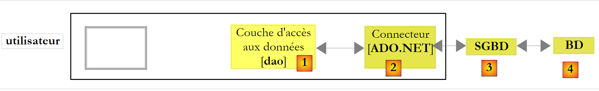 |
Abbiamo visto diversi tipi di connettori ADO.NET:
- i connettori proprietari sono i più performanti, ma rendono il livello [dao] dipendente da classi proprietarie. Cambiare il SGBD implica cambiare il livello [dao].
- I connettori ODBC, OLE o DB consentono di lavorare con più database senza modificare il livello [dao]. Sono meno performanti dei connettori proprietari.
- Il connettore generico si basa sui connettori proprietari, pur presentando un’interfaccia standard per il livello [dao].
Sembra quindi che il connettore generico sia la soluzione ideale. In pratica, tuttavia, il connettore generico non riesce a nascondere tutte le peculiarità di un SGBD dietro un’interfaccia standard. Nel paragrafo seguente vedremo il concetto di query parametrizzata. Con SQL Server, una query parametrizzata ha la seguente forma:
Con MySQL5, la stessa query verrebbe scritta come segue:
Esiste quindi una differenza di sintassi. La proprietà dell’interfaccia IDbCommand descritta al paragrafo 9.3.3, relativa ai parametri, è la seguente:
l'elenco dei parametri di un ordine SQL configurato. L'ordine update articles set prix=prix*1.1 where id=@id ha il parametro @id. |
La proprietà Parameters è di tipo IDataParameterCollection, un'interfaccia. Rappresenta l'insieme dei parametri dell'ordine SQL CommandText. La proprietà Parameters dispone di un metodo Add per aggiungere parametri di tipo IDataParameter, anch’essa un’interfaccia. Quest’ultima presenta le seguenti proprietà:
- ParameterName: nome del parametro
- DbType: il tipo SQL del parametro
- Value: il valore assegnato al parametro
- ...
Il tipo IDataParameter è adatto ai parametri dell'ordine SQL
poiché in esso sono presenti parametri con nome. È possibile utilizzare la proprietà ParameterName.
Il tipo IDataParameter non è adatto all'ordine SQL
poiché i parametri non sono denominati. In tal caso, viene preso in considerazione l'ordine di inserimento dei parametri nella raccolta [IDbCommand.Parameters]. In questo esempio, sarà necessario inserire i 4 parametri nell’ordine nom, prix, stockactuel, stockminimum. Nella richiesta con parametri denominati, l’ordine di inserimento dei parametri non ha importanza. In definitiva, lo sviluppatore non può ignorare completamente il SGBD che utilizza quando inizializza i parametri di una richiesta parametrizzata. Questo rappresenta uno degli attuali limiti del connettore generico.
Esistono frameworks che superano questi limiti e che, inoltre, apportano nuove funzionalità al livello [dao]:
 |
Un framework è un insieme di librerie di classi volte a facilitare un determinato modo di strutturare l’applicazione. Ne esistono diversi che consentono di scrivere livelli [dao] al tempo stesso performanti e insensibili ai cambiamenti di SGBD:
- Spring.Net [http://www.springframework.net/], già presentato in questo documento, offre l’equivalente del connettore generico esaminato, senza le sue limitazioni, oltre a diverse funzionalità che semplificano l’accesso ai dati. Esiste una versione Java.
- iBatis.Net [http://ibatis.apache.org] è più vecchio e più ricco di funzionalità rispetto a Spring.Net. Esiste una versione Java.
- NHibernate [http://www.hibernate.org/] è un porting della versione Java di Hibernate, molto nota nel mondo Java. NHibernate consente al livello [dao] di interagire con SGBD senza emettere comandi SQL. Il livello [dao] opera con oggetti Hibernate. Un linguaggio di query HBL (Hibernate Query Language) consente di eseguire query sugli oggetti gestiti da Hibernate. Sono proprio questi ultimi a emettere i comandi SQL. Hibernate è in grado di adattarsi ai SQL proprietari dei SGBD.
- LINQ (Language INtegrated Query), integrato nella versione 3.5 .NET e disponibile in C# 2008. LINQ segue le orme di NHibernate, ma per il momento (maggio 2008) è supportato solo il server SGBD SQL. La situazione dovrebbe evolversi nel tempo. LINQ va oltre NHibernate: il suo linguaggio di query consente di interrogare in modo standard tre diversi tipi di fonti di dati:
- raccolte di oggetti (LINQ to Objects)
- un file XML (LINQ to XML)
- un database (LINQ to SQL)
Questi framework non saranno trattati in questo documento. Si consiglia tuttavia vivamente di utilizzarli nelle applicazioni professionali.
9.5. Query parametrizzate
Nel paragrafo precedente abbiamo accennato alle query parametrizzate. Le presentiamo qui con un esempio relativo a SGBD SQL Server Compact. Il progetto è il seguente
 |
- in [1], il progetto. Vengono utilizzati solo [App.config], [Article.cs] e [Parametres.cs]. Si noti inoltre la base SQL Server Ce [dbarticles.sdf].
- In [2], il progetto è configurato per eseguire [Parametres.cs]
- in [3], i riferimenti del progetto
Il file di configurazione [App.config] definisce la stringa di connessione al database:
<?xml version="1.0" encoding="utf-8" ?>
<configuration>
<connectionStrings>
<add name="dbArticlesSqlServerCe" connectionString="Data Source=|DataDirectory|\dbarticles.sdf;Password=dbarticles;" />
</connectionStrings>
</configuration>
Il file [Article.cs] definisce una classe [Article]. Un oggetto Article verrà utilizzato per incapsulare le informazioni di una riga della tabella ARTICLES del database [dbarticles.sdf]:
namespace Chap7 {
class Article {
// proprietà
public int Id { get; set; }
public string Nom { get; set; }
public decimal Prix { get; set; }
public int StockActuel { get; set; }
public int StockMinimum { get; set; }
// costruttori
public Article() {
}
public Article(int id, string nom, decimal prix, int stockActuel, int stockMinimum) {
Id = id;
Nom = nom;
Prix = prix;
StockActuel = stockActuel;
StockMinimum = stockMinimum;
}
}
}
L'applicazione [Parametres.cs] implementa le query parametrizzate:
using System;
using System.Data.SqlServerCe;
using System.Text;
using System.Data;
using System.Configuration;
namespace Chap7 {
class Parametres {
static void Main(string[] args) {
// elaborazione del file di configurazione
string connectionString = null;
try {
// stringa di connessione
connectionString = ConfigurationManager.ConnectionStrings["dbArticlesSqlServerCe"].ConnectionString;
} catch (Exception e) {
Console.WriteLine("Erreur de configuration : {0}", e.Message);
return;
}
// visualizzazioni
Console.WriteLine("Chaîne de connexion à la base : [{0}]\n", connectionString);
// creazione di una tabella articoli
Article[] articles = new Article[5];
for (int i = 1; i <= articles.Length; i++) {
articles[i-1] = new Article(0, "article" + i, i * 100, i * 10, i);
}
// gestione delle eventuali eccezioni
try {
// eliminazione degli articoli esistenti dal database
ExecuteUpdate(connectionString, "delete from articles");
// visualizzazione degli articoli della tabella
ExecuteSelect(connectionString, "select id,nom,prix,stockactuel,stockminimum from articles");
// inserimento della tabella degli articoli nel database
InsertArticles(connectionString, articles);
// vengono visualizzati gli articoli della tabella
ExecuteSelect(connectionString, "select id,nom,prix,stockactuel,stockminimum from articles");
} catch (Exception ex) {
// messaggio di errore
Console.WriteLine("Erreur d'accès à la base de données (" + ex.Message + ")");
}
}
// inserimento di una tabella di articoli
static void InsertArticles(string connectionString, Article[] articles) {
using (SqlCeConnection connexion = new SqlCeConnection(connectionString)) {
// apertura della connessione
connexion.Open();
// configurazione dell'ordine
string requête = "insert into articles(nom,prix,stockactuel,stockminimum) values(@nom,@prix,@sa,@sm)";
SqlCeCommand sqlCommand = new SqlCeCommand(requête, connexion);
sqlCommand.Parameters.Add("@nom",SqlDbType.NVarChar,30);
sqlCommand.Parameters.Add("@prix", SqlDbType.Money);
sqlCommand.Parameters.Add("@sa", SqlDbType.Int);
sqlCommand.Parameters.Add("@sm", SqlDbType.Int);
// compilazione dell'ordine
sqlCommand.Prepare();
// inserimento delle righe
for (int i = 0; i < articles.Length; i++) {
// inizializzazione dei parametri
sqlCommand.Parameters["@nom"].Value = articles[i].Nom;
sqlCommand.Parameters["@prix"].Value = articles[i].Prix;
sqlCommand.Parameters["@sa"].Value = articles[i].StockActuel;
sqlCommand.Parameters["@sm"].Value = articles[i].StockMinimum;
// esecuzione della richiesta
sqlCommand.ExecuteNonQuery();
}
}
}
// esecuzione di una query di aggiornamento
static void ExecuteUpdate(string connectionString, string requête) {
...
}
// esecuzione di una query Select
static void ExecuteSelect(string connectionString, string requête) {
...
}
// visualizzazione del reader
static void AfficheReader(IDataReader reader) {
...
}
}
La novità rispetto a quanto visto in precedenza è la procedura [InsertArticles] alle righe 51-75:
- riga 51: la procedura riceve due parametri:
- la stringa di connessione connectionString, che consentirà alla procedura di connettersi al database
- un array di oggetti Article da aggiungere alla tabella Articles del database
- riga 56: la query di inserimento di un oggetto [Article]. Ha quattro parametri:
- @nom: il nome dell’articolo
- @prix: il suo prezzo
- @sa: la sua disponibilità attuale
- @sm: la sua scorta minima
La sintassi di questa richiesta parametrizzata è proprietaria di SQL Server Compact. Abbiamo visto nel paragrafo precedente che con MySQL5 la sintassi sarebbe la seguente:
Con SQL Server Compact, ogni parametro deve essere preceduto dal carattere @. Il nome dei parametri è libero.
- righe 58-61: si definiscono le caratteristiche di ciascuno dei 4 parametri e li si aggiunge, uno per uno, all'elenco dei parametri dell'oggetto SqlCeCommand che incapsula l'ordine SQL che verrà eseguito.
Qui si utilizza il metodo [SqlCeCommand].Parameters.Add, che presenta sei firme. Utilizziamo le due seguenti:
Add(string parameterName, SQLDbType type)
aggiunge e configura il parametro denominato parameterName. Questo nome deve essere uno di quelli della query parametrizzata configurata: (@nome, ...). type indica il tipo SQL della colonna a cui si riferisce il parametro. Sono disponibili numerosi tipi, tra cui i seguenti:
tipo SQL | tipo C# | commento |
Int64 | ||
DateTime | ||
Decimale | ||
Doppio | ||
Int32 | ||
Decimale | ||
String | stringa di lunghezza fissa | |
String | stringa di lunghezza variabile | |
Singolo |
Add(string parameterName, SQLDbType type, int size)
il terzo parametro size definisce la dimensione della colonna. Questa informazione è utile solo per alcuni tipi, ad esempio il tipo NVarChar.
- riga 63: si compila la query parametrizzata. Si dice anche che la si prepara, da cui il nome del metodo. Questa operazione non è indispensabile. Serve a migliorare le prestazioni. Quando un SGBD esegue un comando SQL, esegue un certo lavoro di ottimizzazione prima di eseguirlo. Una query parametrizzata è destinata ad essere eseguita più volte con parametri diversi. Il testo della query, invece, non cambia. Il lavoro di ottimizzazione può quindi essere eseguito una sola volta. Alcuni SGBD hanno la possibilità di “preparare” o “compilare” le query parametrizzate. Viene quindi definito un piano di esecuzione per tale query. Si tratta della fase di ottimizzazione di cui abbiamo parlato. Una volta compilata, la query viene eseguita ripetutamente, ogni volta con nuovi parametri effettivi ma con lo stesso piano di esecuzione.
La compilazione non è l’unico vantaggio delle query parametrizzate. Riprendiamo la query esaminata:
Si potrebbe voler costruire il testo della query tramite programma:
string requête="insert into articles(nom,prix,stockactuel,stockminimum) values('"+nom+"',"+prix+","+sa+","+sm+")";
Nell’esempio sopra riportato, se (nome, prezzo, sa, sm) è pari a ("articolo1", 100, 10, 1), la query precedente diventa:
string requête="insert into articles(nom,prix,stockactuel,stockminimum) values('article1',100,10,1)";
Ora, se (nome, prezzo, sa, sm) è pari a ("l'articolo1", 100, 10, 1), la query precedente diventa:
string requête="insert into articles(nom,prix,stockactuel,stockminimum) values('l'article1',100,10,1)";
e diventa sintatticamente errata a causa dell'apostrofo nel nome l'article1. Se nom deriva da un inserimento dell'utente, ciò significa che dobbiamo verificare se l'inserimento non contenga apostrofi e, in caso contrario, neutralizzarli. Questa neutralizzazione dipende da SGBD. Il vantaggio della query preparata è che svolge essa stessa questo lavoro. Questa semplificazione giustifica da sola l’uso di una query preparata.
- righe 65-73: gli elementi della tabella vengono inseriti uno per uno
- righe 67-70: ciascuno dei quattro parametri della query riceve il proprio valore tramite la proprietà Value.
- riga 72: la query di inserimento, ora completa, viene eseguita come di consueto.
Ecco un esempio di esecuzione:
- riga 3: messaggio dopo l'eliminazione di tutte le righe della tabella
- righe 5-7: mostrano che la tabella è vuota
- righe 10-18: mostrano la tabella dopo l’inserimento dei 5 articoli
9.6. Transactions
9.6.1. Informazioni generali
Una transazione è una sequenza di comandi SQL eseguita in modo "atomico":
- o tutte le operazioni vanno a buon fine
- oppure una di esse fallisce e quindi tutte quelle precedenti vengono annullate
Alla fine, le operazioni di una transazione sono state tutte applicate con successo oppure nessuna è stata applicata. Quando l’utente ha il controllo diretto della transazione, la convalida tramite un comando COMMIT oppure la annulla tramite un comando ROLLBACK.
Nei nostri esempi precedenti non abbiamo utilizzato alcuna transazione. Eppure ce n’era una, poiché in un SGBD un ordine SQL viene sempre eseguito all’interno di una transazione. Se il cliente .NET non avvia autonomamente una transazione esplicita, il SGBD utilizza una transazione implicita. Si presentano quindi due casi comuni:
- ogni singolo comando SQL è oggetto di una transazione, avviata dal comando SGBD prima del comando stesso e successivamente chiusa. Si dice che si è in modalità autocommit. Tutto avviene quindi come se il client .NET effettuasse transazioni per ogni ordine SQL.
- Il SGBD non è in modalità autocommit e avvia una transazione implicita al primo ordine SQL che il cliente .NET emette al di fuori di una transazione, lasciando che sia il cliente a chiuderla. Tutti gli ordini SQL emessi dal client .NET fanno quindi parte della transazione implicita. Quest’ultima può terminare in seguito a diversi eventi: il cliente chiude la connessione, avvia una nuova transazione, ... ma in tal caso ci si trova in una situazione dipendente dal SGBD. Si tratta di una modalità da evitare.
La modalità predefinita è generalmente stabilita dalla configurazione del SGBD. Alcuni SGBD sono predefiniti in modalità autocommit, altri no. SQLServer Compact è predefinito in modalità autocommit.
I comandi SQL dei diversi utenti vengono eseguiti contemporaneamente in transazioni che operano in parallelo. Le operazioni effettuate da una transazione possono influire su quelle effettuate da un’altra transazione. Si distinguono quattro livelli di isolamento tra le transazioni dei diversi utenti:
- Lettura non confermata
- Lettura confermata
- Lettura ripetibile
- Serializable
Lettura non confermata
Questa modalità di isolamento è nota anche come "Dirty Read". Ecco un esempio di ciò che può accadere in questa modalità:
- un utente U1 avvia una transazione su una tabella T
- un utente U2 avvia una transazione sulla stessa tabella T
- l'utente U1 modifica alcune righe della tabella T ma non le conferma ancora
- l’utente U2 “vede” queste modifiche e prende decisioni in base a ciò che vede
- l’utente annulla la propria transazione tramite un ROLLBACK
Si nota che al punto 4, l’utente U2 ha preso una decisione sulla base di dati che in seguito si riveleranno errati.
Committed Read
Questa modalità di isolamento evita l’insidiosa situazione descritta in precedenza. In questa modalità, l’utente U2 al punto 4 non “vedrà” le modifiche apportate dall’utente U1 alla tabella T. Le vedrà solo dopo che U1 avrà completato la propria transazione.
In questa modalità, nota anche come “Unrepeatable Read”, si possono tuttavia verificare le seguenti situazioni:
- un utente U1 avvia una transazione su una tabella T
- un utente U2 avvia una transazione sulla stessa tabella T
- l’utente U2 esegue un’operazione SELECT per ottenere la media della colonna C delle righe di T che soddisfano una determinata condizione
- l'utente U1 modifica (UPDATE) alcuni valori della colonna C di T e li convalida (COMMIT)
- l'utente U2 ripete la stessa operazione SELECT descritta al punto 3. Noterà che la media della colonna C è cambiata a causa delle modifiche apportate da U1.
Ora l’utente U2 vede solo le modifiche “convalidate” da U1. Tuttavia, pur rimanendo nella stessa transazione, due operazioni identiche (le operazioni 3 e 5) danno risultati diversi. Il termine «Unrepeatable Read» indica questa situazione. Si tratta di una situazione fastidiosa per chi desidera avere un’immagine stabile della tabella T.
Lettura ripetibile
In questa modalità di isolamento, un utente ha la garanzia di ottenere gli stessi risultati nelle sue letture del database fintanto che rimane nella stessa transazione. Lavora su un’istantanea in cui non vengono mai riportate le modifiche apportate da altre transazioni, anche se convalidate. Le vedrà solo quando lui stesso terminerà la propria transazione con un COMMIT o un ROLLBACK.
Questa modalità di isolamento, tuttavia, non è ancora perfetta. Dopo l’operazione 3 sopra descritta, le righe consultate dall’utente U2 vengono bloccate. Durante l’operazione 4, l’utente U1 non potrà modificare (UPDATE) i valori della colonna C di tali righe. Potrà tuttavia aggiungere nuove righe (INSERT). Se alcune delle righe aggiunte soddisfano la condizione verificata al punto 3, l'operazione 5 fornirà una media diversa da quella ottenuta al punto 3 a causa delle righe aggiunte. Queste righe vengono talvolta chiamate "righe fantasma".
Per risolvere questo nuovo problema, è necessario passare al livello di isolamento «Serializable».
Serializable
In questa modalità di isolamento, le transazioni sono completamente isolate le une dalle altre. Essa garantisce che il risultato di due transazioni eseguite simultaneamente sarà lo stesso che si otterrebbe se fossero eseguite una dopo l’altra. Per ottenere questo risultato, durante l’operazione 4, in cui l’utente U1 intende aggiungere righe che modificherebbero il risultato dell’operazione SELECT dell’utente U1, gli verrà impedito di farlo. Un messaggio di errore gli indicherà che l’inserimento non è possibile. Diventerà possibile solo quando l’utente U2 avrà confermato la propria transazione.
I quattro livelli di isolamento delle transazioni SQL non sono disponibili in tutti i SGBD. Il livello di isolamento predefinito è in genere il livello Committed Read. Il livello di isolamento desiderato per una transazione può essere specificato esplicitamente al momento della creazione di una transazione esplicita da parte di un cliente .NET.
9.6.2. La gestione delle transazioni API
Una connessione implementa l’interfaccia IDbConnection descritta nel paragrafo 9.3.3. Questa interfaccia dispone del seguente metodo:
M | avvia una transazione. |
Questo metodo ha due firme:
- IDbTransaction BeginTransaction(): avvia una transazione e restituisce l'oggetto IDbTransaction che consente di controllarla
- IDbTransaction BeginTransaction(IsolationLevel level): specifica inoltre il livello di isolamento desiderato per la transazione. level assume i propri valori dalla seguente enumerazione:
la transazione può leggere dati scritti da un’altra transazione che non sono ancora stati convalidati da quest’ultima – da evitare | |
la transazione non può leggere dati scritti da un'altra transazione che non siano stati ancora confermati da quest'ultima. I dati letti due volte di seguito nella transazione possono tuttavia cambiare (letture non ripetibili) poiché un'altra transazione potrebbe averli modificati nel frattempo (le righe lette non sono bloccate - solo quelle aggiornate lo sono). Inoltre, un’altra transazione potrebbe aver aggiunto delle righe (righe fantasma) che verranno incluse nella seconda lettura. | |
Le righe lette dalla transazione vengono bloccate, proprio come quelle aggiornate. Ciò impedisce che un'altra transazione le modifichi. Tuttavia, ciò non impedisce l'aggiunta di nuove righe. | |
Le tabelle utilizzate dalla transazione vengono bloccate, impedendo l’aggiunta di nuove righe da parte di un’altra transazione. È come se la transazione fosse l’unica in esecuzione. Ciò riduce le prestazioni poiché le transazioni non operano più in parallelo. | |
la transazione opera su una copia dei dati creata al momento T. Utilizzata quando la transazione è in sola lettura. Fornisce lo stesso risultato di serializable evitando i relativi costi. |
Una volta avviata, la transazione è controllata dall’oggetto di tipo IDbTransaction, un’interfaccia di cui utilizzeremo le seguenti proprietà P e metodi M:
Nome | Tipo | Ruolo |
P | connessione IDbConnection che supporta la transazione | |
M | convalida la transazione: i risultati degli ordini SQL emessi nella transazione vengono copiati nel database. | |
M | invalida la transazione - i risultati degli ordini SQL emessi nella transazione non vengono copiati nel database. |
9.6.3. Il programma di esempio
Riprendiamo il progetto precedente per concentrarci ora sul programma [Transactions.cs]:
 |
- in [1], il progetto.
- in [2], il progetto è configurato per eseguire [Transactions.cs]
Il codice di [Transactions.cs] è il seguente:
using System;
using System.Configuration;
using System.Data;
using System.Data.SqlServerCe;
using System.Text;
namespace Chap7 {
class Transactions {
static void Main(string[] args) {
// elaborazione del file di configurazione
string connectionString = null;
try {
// Stringa di connessione
connectionString = ConfigurationManager.ConnectionStrings["dbArticlesSqlServerCe"].ConnectionString;
} catch (Exception e) {
Console.WriteLine("Erreur de configuration : {0}", e.Message);
return;
}
// visualizzazioni
Console.WriteLine("Chaîne de connexion à la base : [{0}]\n", connectionString);
// creazione di una tabella con 2 articoli con lo stesso nome
Article[] articles = new Article[2];
for (int i = 1; i <= articles.Length; i++) {
articles[i - 1] = new Article(0, "article", i * 100, i * 10, i);
}
// gestione delle eventuali eccezioni
try {
Console.WriteLine("Insertion sans transaction...");
// si inserisce la tabella degli articoli nel database, inizialmente senza transazione
ExecuteUpdate(connectionString, "delete from articles");
try {
InsertArticlesOutOfTransaction(connectionString, articles);
} catch (Exception ex) {
// messaggio di errore
Console.WriteLine("Erreur d'accès à la base de données (" + ex.Message + ")");
}
ExecuteSelect(connectionString, "select id,nom,prix,stockactuel,stockminimum from articles");
// si ripete la stessa operazione, ma questa volta all’interno di una transazione
Console.WriteLine("\n\nInsertion dans une transaction...");
ExecuteUpdate(connectionString, "delete from articles");
InsertArticlesInTransaction(connectionString, articles);
ExecuteSelect(connectionString, "select id,nom,prix,stockactuel,stockminimum from articles");
} catch (Exception ex) {
// messaggio di errore
Console.WriteLine("Erreur d'accès à la base de données (" + ex.Message + ")");
}
}
// inserimento di una tabella di articoli senza transazione
static void InsertArticlesOutOfTransaction(string connectionString, Article[] articles) {
....
}
// inserimento di una tabella di articoli all'interno di una transazione
static void InsertArticlesInTransaction(string connectionString, Article[] articles) {
....
}
// esecuzione di una query di aggiornamento
static void ExecuteUpdate(string connectionString, string requête) {
....
}
// esecuzione di una query Select
static void ExecuteSelect(string connectionString, string requête) {
...
}
// visualizzazione del reader
static void AfficheReader(IDataReader reader) {
...
}
}
}
}
- righe 12-19: la stringa di connessione al database SQLServer viene letta in [App.config]
- righe 25-28: viene creato un array di due oggetti Article. Questi due articoli hanno lo stesso nome "articolo". Tuttavia, il database [dbarticles.sdf] presenta un vincolo di unicità sulla colonna [nom] (cfr. paragrafo 9.3.1). Pertanto, questi due articoli non possono essere presenti contemporaneamente nel database. I due articoli denominati «articolo» vengono aggiunti alla tabella articles. Si verificherà quindi un problema, c.a.d: un'eccezione generata da SGBD e inoltrata dal suo connettore ADO.NET. Per illustrare l'effetto della transazione, i due articoli verranno inseriti in due contesti diversi:
- innanzitutto al di fuori di qualsiasi transazione. Va ricordato che, in questo caso, SQLServer Compact opera in modalità autocommit, c.a.d. inserisce ogni comando SQL in una transazione implicita. Il primo articolo verrà inserito. Il secondo no.
- Successivamente, in una transazione esplicita che incapsula entrambi gli inserimenti. Poiché il secondo inserimento fallirà, il primo verrà annullato. Alla fine non verrà effettuato alcun inserimento.
- riga 33: la tabella articles viene svuotata
- riga 35: inserimento dei due articoli senza transazione esplicita. Poiché si sa che il secondo inserimento causerà un'eccezione, questa viene gestita da un try/catch
- riga 46: visualizzazione della tabella articles
- righe 44-46: si ripete la stessa sequenza, ma questa volta viene utilizzata una transazione esplicita per effettuare gli inserimenti. L’eccezione che si verifica viene qui gestita dal metodo InsertArticlesInTransaction.
- righe 54-56: il metodo InsertArticlesOutOfTransaction corrisponde al metodo InsertArticles del programma [Parametres.cs] esaminato in precedenza.
- righe 64-66: il metodo ExecuteUpdate è lo stesso di prima. Il comando SQL viene eseguito in una transazione implicita. Ciò è possibile in questo caso poiché si sa che, in questa situazione, SQLServer Compact opera in modalità autocommit.
- righe 69-71: lo stesso vale per il metodo ExecuteSelect.
Il metodo InsertArticlesInTransaction è il seguente:
// inserimento di una tabella di articoli in una transazione
static void InsertArticlesInTransaction(string connectionString, Article[] articles) {
using (SqlCeConnection connexion = new SqlCeConnection(connectionString)) {
// apertura della connessione
connexion.Open();
// configurazione dell'ordine
string requête = "insert into articles(nom,prix,stockactuel,stockminimum) values(@nom,@prix,@sa,@sm)";
SqlCeCommand sqlCommand = new SqlCeCommand(requête, connexion);
sqlCommand.Parameters.Add("@nom", SqlDbType.NVarChar, 30);
sqlCommand.Parameters.Add("@prix", SqlDbType.Money);
sqlCommand.Parameters.Add("@sa", SqlDbType.Int);
sqlCommand.Parameters.Add("@sm", SqlDbType.Int);
// compilazione dell'ordine
sqlCommand.Prepare();
// transazione
SqlCeTransaction transaction = null;
try {
// inizio transazione
transaction = connexion.BeginTransaction(IsolationLevel.ReadCommitted);
// l'ordine SQL deve essere eseguito in questa transazione
sqlCommand.Transaction = transaction;
// inserimento delle righe
for (int i = 0; i < articles.Length; i++) {
// inizializzazione dei parametri
sqlCommand.Parameters["@nom"].Value = articles[i].Nom;
sqlCommand.Parameters["@prix"].Value = articles[i].Prix;
sqlCommand.Parameters["@sa"].Value = articles[i].StockActuel;
sqlCommand.Parameters["@sm"].Value = articles[i].StockMinimum;
// esecuzione della query
sqlCommand.ExecuteNonQuery();
}
// si conferma la transazione
transaction.Commit();
Console.WriteLine("transaction validée...");
} catch {
// si annulla la transazione
if (transaction != null)transaction.Rollback();
Console.WriteLine("transaction invalidée...");
}
}
}
Ci limitiamo a illustrare ciò che lo differenzia dal metodo InsertArticles del programma [Parametres.cs] esaminato in precedenza:
- riga 16: viene dichiarata una transazione SqlCeTransaction.
- righe 17, 35: il blocco try/catch per gestire l’eccezione che si verificherà al termine del secondo inserimento
- riga 19: viene creata la transazione. Essa appartiene alla connessione corrente.
- riga 21: il comando SQL, con i parametri specificati, viene inserito nella transazione
- righe 23-31: vengono effettuati gli inserimenti
- riga 33: tutto è andato a buon fine - la transazione viene confermata - gli inserimenti verranno definitivamente integrati nel database.
- riga 37: si è verificato un problema. La transazione viene annullata, se era stata avviata.
L'esecuzione produce i seguenti risultati:
- riga 4: visualizzata da ExecuteUpdate("delete from articles") - non c'erano righe nella tabella
- riga 5: l'eccezione causata dal secondo inserimento. Il messaggio indica che il vincolo UQ__ARTICLES__0000000000000010 non è stato verificato. Per ulteriori informazioni, consultare le proprietà del database:
 |
- in [1] nella vista [Database Explorer] di Visual Studio, è stata creata una connessione [2] al database [dbarticles.sdf]. Quest’ultima ha un indice UQ__ARTICLES__0000000000000010. Facendo clic con il tasto destro su questo indice, si accede alle sue proprietà (Index properties)
- in [3,4], si vede che l’indice UQ__ARTICLES__0000000000000010 corrisponde a un vincolo di unicità sulla colonna [NOM]
- righe 7-11: visualizzazione della tabella articles dopo i due inserimenti. Non è vuota: il primo articolo è stato inserito.
- riga 15: visualizzata da ExecuteUpdate("delete from articles") - nella tabella era presente una riga
- riga 16: messaggio visualizzato da InsertArticlesInTransaction quando la transazione fallisce.
- righe 18-20: indicano che non è stato effettuato alcun inserimento. Il Rollback della transazione ha annullato il primo inserimento.
9.7. Il metodo ExecuteScalar
9.7.1. Tra i metodi dell’interfaccia IDbCommand descritta al paragrafo 9.3.3, era presente il seguente metodo:
M | per eseguire un comando SQL Select che restituisce un unico risultato, come in: select count(*) from articles. |
Qui mostriamo un esempio di utilizzo di questo metodo. Torniamo al progetto:
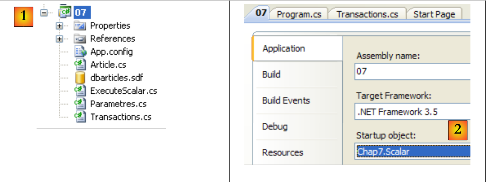 |
- in [1], il progetto.
- in [2], il progetto è configurato per eseguire [ExecuteScalar.cs]
Il programma [ExecuteScalar.cs] è il seguente:
...
namespace Chap7 {
class Scalar {
static void Main(string[] args) {
// elaborazione del file di configurazione
string connectionString = null;
...
// visualizzazioni
Console.WriteLine("Chaîne de connexion à la base : [{0}]\n", connectionString);
// creazione di una tabella di 5 articoli
Article[] articles = new Article[5];
for (int i = 1; i <= articles.Length; i++) {
articles[i - 1] = new Article(0, "article" + i, i * 100, i * 10, i);
}
// gestione delle eventuali eccezioni
try {
// inserimento della tabella degli articoli in una transazione
ExecuteUpdate(connectionString, "delete from articles");
InsertArticlesInTransaction(connectionString, articles);
ExecuteSelect(connectionString, "select id,nom,prix,stockactuel,stockminimum from articles");
// si calcola la media dei prezzi degli articoli
decimal prixMoyen = (decimal)ExecuteScalar(connectionString, "select avg(prix) from articles");
Console.WriteLine("Prix moyen des articles={0}", prixMoyen);
// o il numero di articoli
int nbArticles = (int)ExecuteScalar(connectionString, "select count(id) from articles");
Console.WriteLine("Nombre d'articles={0}", nbArticles);
} catch (Exception ex) {
// messaggio di errore
Console.WriteLine("Erreur d'accès à la base de données (" + ex.Message + ")");
}
}
// inserimento di una tabella di articoli in una transazione
static void InsertArticlesInTransaction(string connectionString, Article[] articles) {
...
}
// esecuzione di una richiesta di aggiornamento
static object ExecuteScalar(string connectionString, string requête) {
using (SqlCeConnection connexion = new SqlCeConnection(connectionString)) {
// apertura della connessione
connexion.Open();
// esecuzione di una query
return new SqlCeCommand(requête, connexion).ExecuteScalar();
}
}
// esecuzione di una query di aggiornamento
static void ExecuteUpdate(string connectionString, string requête) {
...
}
// esecuzione di una query SELECT
static void ExecuteSelect(string connectionString, string requête) {
...
}
// visualizzazione del reader
static void AfficheReader(IDataReader reader) {
...
}
}
}
- righe 14-17: creazione di un array di 5 articoli
- riga 22: la tabella articles viene svuotata
- riga 23: viene riempita con i 5 articoli
- riga 24: la tabella viene visualizzata
- riga 26: viene richiesto il prezzo medio degli articoli
- riga 29: richiede il numero di articoli
- riga 49: utilizzo del metodo [IDbCommand].ExecuteScalar() per calcolare ciascuno di questi valori.
I risultati dell'esecuzione sono i seguenti:
Le righe 15 e 16 mostrano i due valori restituiti dal metodo ExecuteScalar.
9.8. Esempio di applicazione - versione 7
Riprendiamo l’applicazione di esempio IMPOTS. L’ultima versione è stata esaminata nel paragrafo 7.6. Si trattava della seguente applicazione a tre livelli:
 |
- il livello [ui] era un'interfaccia grafica [A] e il livello [dao] ricavava i propri dati da un file di testo [B].
- L'istanziazione dei livelli e la loro integrazione nell'applicazione erano gestite da Spring.
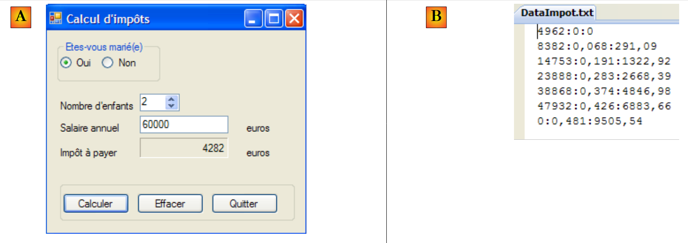 |
Modifichiamo il livello [dao] in modo che recuperi i propri dati da un database.
9.8.1. l database
Il contenuto del precedente file di testo [B] viene inserito in un database MySQL5. Mostriamo come procedere:
 |
- [1]: MySQL Administrator è stato avviato
- [2,3]: nell’area [Schemata], fare clic con il tasto destro del mouse e selezionare l’opzione [Create Schema] per creare un nuovo database
- [4]: il database si chiamerà [bdimpots]
- [5]: è stata aggiunta ai database dell'area [Schemata].
 |
- [6,7]: fare clic con il tasto destro sulla tabella e selezionare l’opzione [Create New Table] per creare una tabella
- [8]: la tabella si chiamerà [tranches]. Avrà le colonne di [id, limite, coeffR, coeffN].
- [9,10]: [id] è la chiave primaria di tipo INTEGER e presenta l'attributo AUTO_INCREMENT [10]: sarà il SGBD a occuparsi di compilare questa colonna quando si aggiungono righe.
- Le colonne [limite, coeffR, coeffN] sono di tipo DOUBLE.
- [11,12]: la nuova tabella compare nella scheda [Schema Tables] del database.
 |
- [13,14]: per inserire dati nella tabella
- [15]: è stato avviato [Query Browser]
- [16]: i dati sono stati inseriti e convalidati per le colonne [limite, coeffR, coeffN]. La colonna [id] è stata compilata da SGBD. La convalida è stata eseguita con [17].
 |
- sempre in [Query Browser] [18], si esegue [20] la richiesta [19]. Questa crea un utente 'admimpots' con password 'mdpimpots' e gli assegna tutti i privilegi (grant all privileges) su tutti gli oggetti del database bdimpots (on bdimpots.*). Questo ci consentirà di lavorare sul database [bdimpots] con l'utente [admimpots] anziché con l'amministratore [root].
9.8.2. La soluzione Visual Studio
 |
Seguiremo la procedura illustrata per la versione 5 dell’applicazione di esempio (cfr. paragrafo 6.4). Costruiremo progressivamente la seguente soluzione Visual Studio:
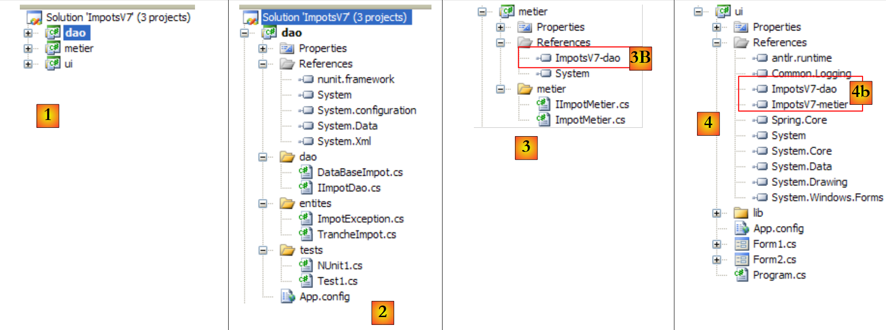 |
- in [1]: la soluzione ImpotsV7 è composta da tre progetti, uno per ciascuno dei tre livelli dell’applicazione
- in [2]: il progetto [dao] del livello [dao] che d’ora in poi utilizzerà un database
- in [3]: il progetto [metier] del livello [metier]. Qui riprendiamo il livello [metier] della versione 5, descritto al paragrafo 6.4.4.
- in [4]: il progetto [ui] del livello [ui]. Riprendiamo qui il livello [ui] della versione 6, descritto al paragrafo 7.6.
Ci basiamo sul lavoro già svolto per recuperare due livelli già scritti, i livelli [ui] e [metier]. Ciò è reso possibile dall’architettura a livelli scelta. Avremo tuttavia bisogno dei codici sorgente dei livelli [ui] e [metier]. Non è infatti possibile limitarsi ai DLL dei livelli. Quando, nella versione 5, è stato creato il DLL del livello [metier], esso presentava una dipendenza dal DLL del livello [dao]. Tale dipendenza è stata hardcoded nel DLL del livello [metier] (nome del DLL del livello [dao], versione, token di identità, ...). Pertanto, la DLL della versione 5 [ImpotsV5-metier.dll] accetta di funzionare solo con la DLL [ImpotsV5-dao.dll] con cui è stata compilata. Se si modifica il DLL del livello [dao], è necessario ricompilare il livello [metier] per creare un nuovo DLL. Lo stesso vale per il livello [ui]. I livelli [ui] e [metier] non subiranno quindi alcuna modifica, ma saranno ricompilati per funzionare con il livello DLL del nuovo livello [dao].
9.8.3. Il livello [dao]
 |
 |
I riferimenti del progetto (cfr. [1] nel progetto)
- nunit.framework: per il test NUnit
- System.Configuration: per utilizzare il file di configurazione [App.config]
- System.Data: poiché si utilizza un database.
Le entità (cfr. [2] nel progetto)
Le classi [TrancheImpot] e [ImpotException] sono quelle delle versioni precedenti.
Il livello [dao] (cfr. [3] nel progetto)
L'interfaccia [IImpotDao] non è cambiata:
using Entites;
namespace Dao {
public interface IImpotDao {
// le fasce di imposta
TrancheImpot[] TranchesImpot{get;}
}
}
La classe di implementazione [DataBaseImpot] di questa interfaccia è la seguente:
using System;
using System.Collections.Generic;
using System.Data.Common;
using Entites;
namespace Dao {
public class DataBaseImpot : IImpotDao {
// scaglioni fiscali
private TrancheImpot[] tranchesImpot;
public TrancheImpot[] TranchesImpot { get { return tranchesImpot; } }
// produttore
public DataBaseImpot(string factory, string connectionString, string requête) {
// factory: la factory del SGBD di destinazione
// connectionString: la stringa di connessione alla base delle fasce d'imposta
// si gestiscono eventuali eccezioni
try {
// si recupera un connettore generico per il SGBD
DbProviderFactory connecteur = DbProviderFactories.GetFactory(factory);
using (DbConnection connexion = connecteur.CreateConnection()) {
// configurazione della connessione
connexion.ConnectionString = connectionString;
// apertura della connessione
connexion.Open();
// configurazione del comando
DbCommand sqlCommand = connecteur.CreateCommand();
sqlCommand.CommandText = requête;
sqlCommand.Connection = connexion;
// esecuzione della richiesta
List<TrancheImpot> listTrancheImpot = new List<TrancheImpot>();
using (DbDataReader reader = sqlCommand.ExecuteReader()) {
while (reader.Read()) {
// si crea una nuova fascia di imposta
listTrancheImpot.Add(new TrancheImpot() { Limite = reader.GetDecimal(0), CoeffR = reader.GetDecimal(1), CoeffN = reader.GetDecimal(2) });
}
}
// si inseriscono le fasce d'imposta nella propria istanza
tranchesImpot = listTrancheImpot.ToArray();
}
} catch (Exception ex) {
// si incapsula l'eccezione in un tipo ImpotException
throw new ImpotException("Erreur de lecture des tranches d'impôt", ex) { Code = 101 };
}
}
}
}
- riga 7: la classe [DataBaseImpot] implementa l'interfaccia [IImpotDao].
- riga 10: l'implementazione del metodo [TranchesImpot] dell'interfaccia. Si limita a restituire un riferimento all'array delle fasce d'imposta della riga 9. Questo array verrà costruito dal costruttore della classe.
- riga 13: il costruttore. Utilizza un connettore generico (cfr. paragrafo 9.4.5) per interrogare il database delle fasce di imposta. Il costruttore riceve tre parametri:
- il nome della "factory" alla quale richiederà le classi per connettersi al database, inviare comandi SQL ed elaborare il risultato di un Select.
- la stringa di connessione che deve utilizzare per connettersi al database
- il comando SQL Select che deve eseguire per ottenere le fasce di imposta.
- riga 19: richiede un connettore alla "factory"
- riga 20: crea una connessione con questo connettore. La connessione viene creata ma non è ancora operativa
- riga 22: viene inizializzata la stringa di connessione. Ora è possibile connettersi.
- riga 24: si effettua la connessione
- riga 26: richiede al connettore un oggetto [DbCommand] per eseguire un ordine SQL
- riga 27: si specifica l'ordine SQL da eseguire
- riga 28: si specifica la connessione su cui eseguirlo
- riga 30: viene creato un elenco [listTrancheImpot] di oggetti di tipo [TrancheImpot], inizialmente vuoto.
- riga 31: viene eseguito il comando SQL Select
- righe 32-35: viene elaborato l'oggetto [DbDataReader] risultante dal comando Select. Ogni riga della tabella risultante dal comando Select viene utilizzata per istanziare un oggetto di tipo [TrancheImpot], che viene aggiunto alla lista [listTrancheImpot].
- riga 38: la lista di oggetti di tipo [TrancheImpot] viene trasferita nell’array della riga 9.
- righe 40-43: un'eventuale eccezione viene incapsulata in un tipo [ImpotException] e le viene assegnato il codice di errore 101 (arbitrario).
Il test [Test1] (cfr. [4] nel progetto)
La classe [Test1] si limita a visualizzare le fasce di imposta sullo schermo. Si tratta della stessa classe già utilizzata nella versione 5 (paragrafo 6.4.3), ad eccezione dell'istruzione che istanzia il livello [dao] (riga 14).
using System;
using Dao;
using Entites;
using System.Configuration;
namespace Tests {
class Test1 {
static void Main() {
// si crea il livello [dao]
IImpotDao dao = null;
try {
// creazione del livello [dao]
dao = new DataBaseImpot(ConfigurationManager.AppSettings["factoryMySql5"], ConfigurationManager.ConnectionStrings["dbImpotsMySql5"].ConnectionString, ConfigurationManager.AppSettings["requete"]);
} catch (ImpotException e) {
// visualizzazione errore
string msg = e.InnerException == null ? null : String.Format(", Exception d'origine : {0}", e.InnerException.Message);
Console.WriteLine("L'erreur suivante s'est produite : [Code={0},Message={1}{2}]", e.Code, e.Message, msg == null ? "" : msg);
// arresto del programma
Environment.Exit(1);
}
// vengono visualizzate le fasce di imposta
TrancheImpot[] tranchesImpot = dao.TranchesImpot;
foreach (TrancheImpot t in tranchesImpot) {
Console.WriteLine("{0}:{1}:{2}", t.Limite, t.CoeffR, t.CoeffN);
}
}
}
}
La riga 14 utilizza il seguente file di configurazione [App.config]:
<?xml version="1.0" encoding="utf-8" ?>
<configuration>
<connectionStrings>
<add name="dbImpotsMySql5" connectionString="Server=localhost;Database=bdimpots;Uid=admimpots;Pwd=mdpimpots;" />
</connectionStrings>
<appSettings>
<add key="requete" value="select limite, coeffr, coeffn from tranches"/>
<add key="factoryMySql5" value="MySql.Data.MySqlClient"/>
</appSettings>
</configuration>
- riga 4: la stringa di connessione al database MySQL5. Si noti che sarà l’utente [admimpots] a stabilire la connessione.
- riga 8: la "factory" per lavorare con SGBD MySQL5
- riga 7: la query SQL Select per ottenere le fasce di imposta.
Il progetto è configurato per eseguire [Test1.cs]:
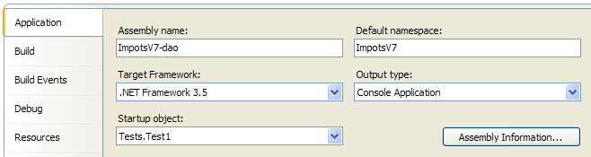
L'esecuzione del test fornisce i seguenti risultati:
Il test NUnit [NUnit1] (cfr. [4] nel progetto)
Il test unitario [NUnit1] è quello già utilizzato nella versione 5 (paragrafo 6.4.3), ad eccezione dell'istruzione che istanzia il livello [dao] (riga 16).
using System;
using System.Configuration;
using Dao;
using Entites;
using NUnit.Framework;
namespace Tests {
[TestFixture]
public class NUnit1 : AssertionHelper{
// livello [dao] da testare
private IImpotDao dao;
// costruttore
public NUnit1() {
// inizializzazione del livello [dao]
dao = new DataBaseImpot(ConfigurationManager.AppSettings["factoryMySql5"], ConfigurationManager.ConnectionStrings["dbImpotsMySql5"].ConnectionString, ConfigurationManager.AppSettings["requete"]);
}
// test
[Test]
public void ShowTranchesImpot(){
// vengono visualizzate le fasce di imposta
TrancheImpot[] tranchesImpot = dao.TranchesImpot;
foreach (TrancheImpot t in tranchesImpot) {
Console.WriteLine("{0}:{1}:{2}", t.Limite, t.CoeffR, t.CoeffN);
}
// alcuni test
Expect(tranchesImpot.Length,EqualTo(7));
Expect(tranchesImpot[2].Limite,EqualTo(14753).Within(1e-6));
Expect(tranchesImpot[2].CoeffR, EqualTo(0.191).Within(1e-6));
Expect(tranchesImpot[2].CoeffN, EqualTo(1322.92).Within(1e-6));
}
}
}
Per eseguire questo test unitario, il progetto deve essere di tipo [Class Library]:
 |
- in [1]: la natura del progetto è stata modificata
- in [2]: il DLL generato si chiamerà [ImpotsV7-dao.dll]
- in [3]: dopo la generazione (F6) del progetto, la cartella [dao/bin/Release] contiene il file DLL [ImpotsV7-dao.dll]. Contiene inoltre il file di configurazione [App.config], rinominato [nom DLL].config. Si tratta di una procedura standard in Visual Studio.
Il file DLL [ImpotsV7-dao.dll] viene quindi caricato nel framework NUnit ed eseguito:
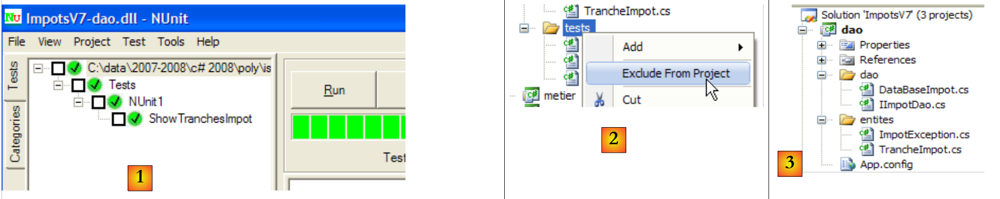 |
- in [1]: i test hanno avuto esito positivo. Consideriamo ora il livello [dao] operativo. Il suo DLL contiene tutte le classi del progetto, comprese quelle di test. Queste ultime non sono necessarie. Ricostruiamo il DLL per escluderne le classi di test.
- in [2]: la cartella [tests] viene esclusa dal progetto
- in [3]: il nuovo progetto. Questo viene rigenerato da F6 per generare un nuovo DLL. È proprio questo DLL che verrà utilizzato dai livelli [metier] e [ui] dell'applicazione.
9.8.4. Il livello [metier]
 |
 |
- in [1], il progetto [metier] è diventato il progetto attivo della soluzione
- in [2]: i riferimenti del progetto. Si noti il riferimento su DLL al livello [dao] creato in precedenza. Questa procedura di aggiunta di un riferimento è stata descritta nella versione 5, al paragrafo 6.4.4.
- in [3]: il livello [metier]. Si tratta di quello della versione 5, descritto al paragrafo 6.4.4.
Il progetto [metier] è configurato per generare un DLL:
 |
- [1]: il progetto è di tipo «libreria di classi»
- [2]: la generazione del progetto produrrà i file DLL, [ImpotsV7-metier.dll] e [3].
Il progetto è stato generato (F6).
9.8.5. Il livello [ui]
 |
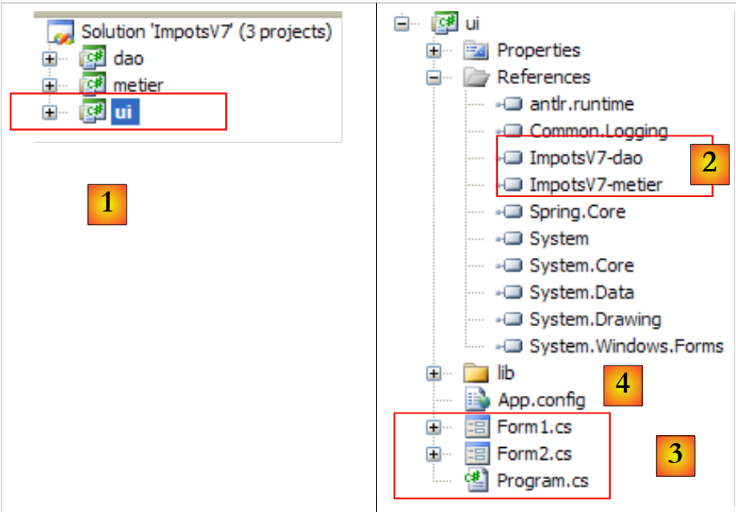 |
- in [1], il progetto [ui] è diventato il progetto attivo della soluzione
- in [2]: i riferimenti del progetto. Si notino i riferimenti su DLL dei livelli [dao] e [metier].
- in [3]: il livello [ui]. Si tratta di quello della versione 6 descritto al paragrafo 7.6.
- in [4], il file di configurazione [App.config] è analogo a quello della versione 6. Si differenzia da esso solo per il modo in cui il livello [dao] viene istanziato da Spring:
<?xml version="1.0" encoding="utf-8" ?>
<configuration>
<configSections>
<sectionGroup name="spring">
<section name="context" type="Spring.Context.Support.ContextHandler, Spring.Core" />
<section name="objects" type="Spring.Context.Support.DefaultSectionHandler, Spring.Core" />
</sectionGroup>
</configSections>
<spring>
<context>
<resource uri="config://spring/objects" />
</context>
<objects xmlns="http://www.springframework.net">
<object name="dao" type="Dao.DataBaseImpot, ImpotsV7-dao">
<constructor-arg index="0" value="MySql.Data.MySqlClient"/>
<constructor-arg index="1" value="Server=localhost;Database=bdimpots;Uid=admimpots;Pwd=mdpimpots;"/>
<constructor-arg index="2" value="select limite, coeffr, coeffn from tranches"/>
</object>
<object name="metier" type="Metier.ImpotMetier, ImpotsV7-metier">
<constructor-arg index="0" ref="dao"/>
</object>
</objects>
</spring>
</configuration>
- righe 11-25: la configurazione Spring
- righe 15-24: gli oggetti istanziati da Spring
- righe 16-20: istanziazione del livello [dao]
- riga 16: il livello [dao] viene istanziato dalla classe [Dao.DataBaseImpot], che si trova all’interno di DLL [ImpotsV7-Dao]
- righe 17-19: i tre parametri (factory del SGBD utilizzato, stringa di connessione, richiesta SQL) da fornire al costruttore della classe [Dao.DataBaseImpot]
- righe 21-23: istanziazione del livello [metier]. Si tratta della stessa configurazione della versione 6.
Test
Il progetto [ui] è configurato come segue:
 |
- [1]: il progetto è di tipo "Windows Application"
- [2]: la generazione del progetto produrrà l'eseguibile [ImpotsV7-ui.exe]
Un esempio di esecuzione è riportato in [3].
9.8.6. Modifica del database
 |
Il livello [dao] sopra riportato è stato scritto utilizzando un connettore generico e una base MySQL5. In questa sede intendiamo passare a una base SQL Server Compact per dimostrare che cambierà solo la configurazione.
La base SQL Server Compact sarà la seguente:
 |
- [1]: il database [dbimpots.sdf] nella vista [DataBase Explorer] di Visual Studio [2]. È stato creato senza password.
- [3]: la tabella [data] che contiene i dati. Abbiamo scelto volutamente nomi diversi per la tabella e le colonne rispetto a quelli utilizzati con il database MySQL5, al fine di sottolineare nuovamente l’importanza di inserire questo tipo di dettagli nel file di configurazione piuttosto che nel codice.
- [4]: la colonna [id] è la chiave primaria e ha l'attributo Identity: è la colonna SGBD che le assegnerà i valori.
- [5]: il contenuto della tabella [data].
 |
- [6]: il database [dbimpots.sdf] è stato inserito nella cartella del progetto [ui] e integrato in tale progetto.
- [7]: il database [dbimpots.sdf] verrà copiato nella cartella di esecuzione del progetto.
Il file di configurazione [App.config] per il nuovo database è il seguente:
<?xml version="1.0" encoding="utf-8" ?>
<configuration>
<configSections>
<sectionGroup name="spring">
<section name="context" type="Spring.Context.Support.ContextHandler, Spring.Core" />
<section name="objects" type="Spring.Context.Support.DefaultSectionHandler, Spring.Core" />
</sectionGroup>
</configSections>
<spring>
<context>
<resource uri="config://spring/objects" />
</context>
<objects xmlns="http://www.springframework.net">
<!--
<object name="dao" type="Dao.DataBaseImpot, ImpotsV7-dao">
<constructor-arg index="0" value="MySql.Data.MySqlClient"/>
<constructor-arg index="1" value="Server=localhost;Database=bdimpots;Uid=admimpots;Pwd=mdpimpots;"/>
<constructor-arg index="2" value="select limite, coeffr, coeffn from tranches"/>
</object>
-->
<object name="dao" type="Dao.DataBaseImpot, ImpotsV7-dao">
<constructor-arg index="0" value="System.Data.SqlServerCe.3.5"/>
<constructor-arg index="1" value="Data Source=|DataDirectory|\dbimpots.sdf;" />
<constructor-arg index="2" value="select data1, data2, data3 from data"/>
</object>
<object name="metier" type="Metier.ImpotMetier, ImpotsV7-metier">
<constructor-arg index="0" ref="dao"/>
</object>
</objects>
</spring>
</configuration>
- righe 23-27: la configurazione del livello [dao] per l’utilizzo del database [dbimpots.sdf].
I risultati dell’esecuzione sono identici a quelli precedenti. Si noti l’opportunità di utilizzare un connettore generico per rendere il livello [dao] insensibile alla modifica di SGBD. Abbiamo tuttavia visto che questo connettore non è adatto a tutte le situazioni, in particolare quelle in cui vengono utilizzate query parametrizzate. Esistono quindi altre soluzioni, come quella menzionata, ovvero i framework di terze parti per l’accesso ai dati (Spring, iBatis, NHibernate, LINQ, ...).
9.9. Per approfondire...
- LINQ è presentato in numerose pubblicazioni, in particolare nel libro: «C# 3.0 in a Nutshell», di Joseph e Ben Albahari, edito da O'Reilly, già citato nell'introduzione del presente documento.
- iBatis è presentato nel libro: «iBatis in Action», di Clinton Begin, edito da Manning
- "Nhibernate in Action", edito da Manning, è previsto per luglio 2008
Spring, iBatis e NHibernate dispongono di manuali di riferimento disponibili sui siti web dei rispettivi framework.